<!DOCTYPE html>
<html lang="ml">
<head>
  <meta charset="utf-8">
  <meta name="viewport" content="width=device-width, initial-scale=1.0">
  <title>Pages 41-60 - Class 9 Social science 1</title>
  <style>

:root {
  --bg-color: #fcfcfd;
  --card-bg: #ffffff;
  --text-color: #1e293b;
  --text-muted: #64748b;
  --primary-color: #0284c7;
  --primary-light: #e0f2fe;
  --border-color: #e2e8f0;
  --radius: 10px;
  --shadow: 0 4px 6px -1px rgb(0 0 0 / 0.05), 0 2px 4px -2px rgb(0 0 0 / 0.05);
}

body {
  font-family: -apple-system, BlinkMacSystemFont, "Segoe UI", Roboto, "Noto Sans Malayalam", "Manjari", "Gayathri", sans-serif;
  background-color: var(--bg-color);
  color: var(--text-color);
  line-height: 1.8;
  font-size: 1.1rem;
  margin: 0;
  padding: 0;
}

.container {
  max-width: 860px;
  margin: 0 auto;
  padding: 2.5rem 1.5rem 5rem 1.5rem;
}

header {
  margin-bottom: 2.5rem;
  padding-bottom: 1.5rem;
  border-bottom: 2px solid var(--border-color);
}

.badge-row {
  display: flex;
  gap: 0.5rem;
  margin-bottom: 0.75rem;
  flex-wrap: wrap;
}

.badge {
  display: inline-block;
  font-size: 0.75rem;
  font-weight: 700;
  text-transform: uppercase;
  letter-spacing: 0.05em;
  padding: 0.25rem 0.65rem;
  border-radius: 9999px;
  background: var(--primary-light);
  color: var(--primary-color);
}

.badge-medium {
  background: #fef3c7;
  color: #b45309;
}

.badge-class {
  background: #dcfce7;
  color: #15803d;
}

h1 {
  font-size: 2.1rem;
  font-weight: 800;
  margin: 0.5rem 0 1rem 0;
  line-height: 1.3;
  color: #0f172a;
}

.nav-bar {
  display: flex;
  justify-content: space-between;
  margin: 1.5rem 0;
  font-size: 0.95rem;
  flex-wrap: wrap;
  gap: 0.5rem;
}

.nav-bar a {
  color: var(--primary-color);
  text-decoration: none;
  font-weight: 600;
  padding: 0.5rem 1rem;
  border-radius: var(--radius);
  background: var(--card-bg);
  border: 1px solid var(--border-color);
  transition: all 0.2s ease;
}

.nav-bar a:hover {
  background: var(--primary-light);
  border-color: var(--primary-color);
}

.nav-bar .disabled {
  color: var(--text-muted);
  pointer-events: none;
  border-color: transparent;
  background: transparent;
}

.page-section {
  background: var(--card-bg);
  border: 1px solid var(--border-color);
  border-radius: var(--radius);
  box-shadow: var(--shadow);
  padding: 2rem;
  margin-bottom: 2.5rem;
}

.page-header {
  display: flex;
  align-items: center;
  justify-content: space-between;
  margin-bottom: 1.25rem;
  padding-bottom: 0.5rem;
  border-bottom: 1px dashed var(--border-color);
}

.page-number {
  font-size: 0.8rem;
  font-weight: 700;
  text-transform: uppercase;
  color: var(--text-muted);
  letter-spacing: 0.05em;
}

.page-content p {
  margin: 0 0 1.25rem 0;
  white-space: pre-wrap;
  word-break: break-word;
}

.page-content p:last-child {
  margin-bottom: 0;
}

.diagram-card {
  margin: 2rem 0;
  text-align: center;
  background: #f8fafc;
  border: 1px solid var(--border-color);
  border-radius: var(--radius);
  padding: 1rem;
  overflow: hidden;
}

.diagram-card img {
  max-width: 100%;
  height: auto;
  border-radius: calc(var(--radius) - 4px);
  display: inline-block;
  box-shadow: 0 2px 4px rgba(0,0,0,0.04);
}

.diagram-card figcaption {
  font-size: 0.85rem;
  color: var(--text-muted);
  margin-top: 0.75rem;
  font-weight: 500;
}

footer {
  margin-top: 3rem;
  padding-top: 2rem;
  border-top: 2px solid var(--border-color);
}

  </style>
</head>
<body>
  <div class="container">
    <header>
      <div class="badge-row">
        <span class="badge badge-class">Class 9</span>
        <span class="badge badge-medium">Malayalam Medium</span>
        <span class="badge">Social science 1</span>
        <span class="badge">Part 1</span>
      </div>
      <h1>Pages 41-60</h1>
      <div class="nav-bar"><a href="part_1_pages_2140.html">← Pages 21-40</a><a href="index.html">☰ Index</a><a href="part_1_pages_6180.html">Pages 61-80 →</a></div>
    </header>
    <main>
<section class="page-section" id="page-41">
  <div class="page-header"><span class="page-number">Page 41</span></div>
  <figure class="diagram-card" id="fig_ch03_p041_01"><figcaption>Figure fig_ch03_p041_01 (Page 41)</figcaption></figure>
  <figure class="diagram-card" id="fig_ch03_p041_02"><figcaption>Figure fig_ch03_p041_02 (Page 41)</figcaption></figure>
  <figure class="diagram-card" id="fig_ch03_p041_03"><figcaption>Figure fig_ch03_p041_03 (Page 41)</figcaption></figure>
  <figure class="diagram-card" id="fig_ch03_p041_04"><figcaption>Figure fig_ch03_p041_04 (Page 41)</figcaption></figure>
  <figure class="diagram-card" id="fig_ch03_p041_05"><figcaption>Figure fig_ch03_p041_05 (Page 41)</figcaption></figure>
  <figure class="diagram-card" id="fig_ch03_p041_06"><figcaption>Figure fig_ch03_p041_06 (Page 41)</figcaption></figure>
  <figure class="diagram-card" id="fig_ch03_p041_07"><figcaption>Figure fig_ch03_p041_07 (Page 41)</figcaption></figure>
  <figure class="diagram-card" id="fig_ch03_p041_08"><figcaption>Figure fig_ch03_p041_08 (Page 41)</figcaption></figure>
  <figure class="diagram-card" id="fig_ch03_p041_09"><figcaption>Figure fig_ch03_p041_09 (Page 41)</figcaption></figure>
  <figure class="diagram-card" id="fig_ch03_p041_10"><figcaption>Figure fig_ch03_p041_10 (Page 41)</figcaption></figure>
  <figure class="diagram-card" id="fig_ch03_p041_11"><figcaption>Figure fig_ch03_p041_11 (Page 41)</figcaption></figure>
  <div class="page-content">
    <p>ǢšÄ¢Å§-&lt;<br>41<br>f”ā‘cf„DzsšŽšȹā‘c<br>ŽšȹŽžˆœsŽc÷œ–›Æ<br>x“¡}†Æs››Ž›Úų‹žˆ}śÆ†›ų§÷œ–›¡źǚš†cs¡ĬŞ<br>÷œ–›Æ ¡ˆš‚–ŽäƩc ‹ŽĹ›†Œš› ÷šŒāÇ pų›ă†›ų<br>e“†uŽŽšȹāÇmų›¡ƀНpŽ†uŽ“c xǯŒǬsšÅ•›s<br>÷šŒā‘ciÇ¡ƀĞ‚š›ŽųpŽ†uŽŽšȹcsųs‘cˆÅ“‚ā‘c<br>h†uŽŽšȹāÇÚ§ƂՂ›„ĹŒše‚›ÅśsdžÆs›x›†uŽ<br>ŽšȹāÇ „ǵœˆs‘š›Žų iÅų sųsÇÚ§ Œœ¡‚š›Žų<br>†uŽŽšȹā‘¡} ‚ǚš†c n‚Ä–§ ǝšÅĞ ¡sš›Ŧ§ ‚œŠ§–§<br>mų›“š›Žų÷œ–›¡Ƃ…š††uŽŽšȹāÇ<br>z†š…›ˆ‚Dz“’››¡n‚Ä–§<br>ŽĬš›ŽĹ› e̞“Å•āÇÚ§ ŒƠ§ ÷œ–›¡ n‚Ä–›Æ<br>†›†›ų›Žų ‹Ž–Ƣ„šc f…†›s z†š…›ˆ‚Dz¢Ĺš}§ –šŒDz<br>ŒǬ pųš›Žų g‚§ Œǯ †uŽŽšȹā‘›¡ ‹ŽŽœ‚››Æ †›ų§<br>“Dz‚DzǙŒš›Žųe}›ŒsÇeƽšĹ 30“ǡǬmƽšˆŽ•Ŷš<br>¡Žcˆ­ŽŶšŽš›sÚšÚ››Žųhˆ­ŽŶšÅiÇ¡ƀĞpŽ<br>÷œ–§<br>‚œŠ§–§<br>¡sš›Ŧ§<br>n‚Ä–§<br>ǝšÅĞ<br>‹žˆ}c</p>
  </div>
</section>
<section class="page-section" id="page-42">
  <div class="page-header"><span class="page-number">Page 42</span></div>
  <figure class="diagram-card" id="fig_ch03_p042_01"><figcaption>Figure fig_ch03_p042_01 (Page 42)</figcaption></figure>
  <figure class="diagram-card" id="fig_ch03_p042_02"><figcaption>Figure fig_ch03_p042_02 (Page 42)</figcaption></figure>
  <figure class="diagram-card" id="fig_ch03_p042_03"><figcaption>Figure fig_ch03_p042_03 (Page 42)</figcaption></figure>
  <figure class="diagram-card" id="fig_ch03_p042_04"><figcaption>Figure fig_ch03_p042_04 (Page 42)</figcaption></figure>
  <figure class="diagram-card" id="fig_ch03_p042_05"><figcaption>Figure fig_ch03_p042_05 (Page 42)</figcaption></figure>
  <figure class="diagram-card" id="fig_ch03_p042_06"><figcaption>Figure fig_ch03_p042_06 (Page 42)</figcaption></figure>
  <figure class="diagram-card" id="fig_ch03_p042_07"><figcaption>Figure fig_ch03_p042_07 (Page 42)</figcaption></figure>
  <figure class="diagram-card" id="fig_ch03_p042_08"><figcaption>Figure fig_ch03_p042_08 (Page 42)</figcaption></figure>
  <figure class="diagram-card" id="fig_ch03_p042_09"><figcaption>Figure fig_ch03_p042_09 (Page 42)</figcaption></figure>
  <figure class="diagram-card" id="fig_ch03_p042_10"><figcaption>Figure fig_ch03_p042_10 (Page 42)</figcaption></figure>
  <figure class="diagram-card" id="fig_ch03_p042_11"><figcaption>Figure fig_ch03_p042_11 (Page 42)</figcaption></figure>
  <figure class="diagram-card" id="fig_ch03_p042_12"><figcaption>Figure fig_ch03_p042_12 (Page 42)</figcaption></figure>
  <figure class="diagram-card" id="fig_ch03_p042_13"><figcaption>Figure fig_ch03_p042_13 (Page 42)</figcaption></figure>
  <figure class="diagram-card" id="fig_ch03_p042_14"><figcaption>Figure fig_ch03_p042_14 (Page 42)</figcaption></figure>
  <figure class="diagram-card" id="fig_ch03_p042_15"><figcaption>Figure fig_ch03_p042_15 (Page 42)</figcaption></figure>
  <figure class="diagram-card" id="fig_ch03_p042_16"><figcaption>Figure fig_ch03_p042_16 (Page 42)</figcaption></figure>
  <figure class="diagram-card" id="fig_ch03_p042_17"><figcaption>Figure fig_ch03_p042_17 (Page 42)</figcaption></figure>
  <figure class="diagram-card" id="fig_ch03_p042_18"><figcaption>Figure fig_ch03_p042_18 (Page 42)</figcaption></figure>
  <figure class="diagram-card" id="fig_ch03_p042_19"><figcaption>Figure fig_ch03_p042_19 (Page 42)</figcaption></figure>
  <figure class="diagram-card" id="fig_ch03_p042_20"><figcaption>Figure fig_ch03_p042_20 (Page 42)</figcaption></figure>
  <figure class="diagram-card" id="fig_ch03_p042_21"><figcaption>Figure fig_ch03_p042_21 (Page 42)</figcaption></figure>
  <figure class="diagram-card" id="fig_ch03_p042_22"><figcaption>Figure fig_ch03_p042_22 (Page 42)</figcaption></figure>
  <figure class="diagram-card" id="fig_ch03_p042_23"><figcaption>Figure fig_ch03_p042_23 (Page 42)</figcaption></figure>
  <div class="page-content">
    <p>–šŒž—Dz”šȼc-<br>42<br>e…Dzšc<br>–Œ›‚›š›ŽųƂ…š†sšŽDzā‘›Æ‚œŽŒš†c£s¡sšĬ›Žų‚§<br>g‚›†š› “Å•Ĺ›Æ †š‚“ g“Å ¢šuc ¢xÅų›Žų<br>ȼœsÇ sŽs­”¡Ĺš’›š‘›sÇ să“}ښŽš› Ƃ“Åś㛎ų<br>“›¢„”›sÇ‚}ā›“¡Žˆ­ŽŽš›sÚšÚ››Žų›ƽ<br>Œ…Dz…ŽDzš’› (Mediterranean sea)Ƃ¢„”¡Ĺsă“}ś¡źƂ…š†¢sůcmų<br>†››Æ n‚Ä–§ –ƠųŒš †uŽŽšȹŒš›Žų sƀÆ †›ÅƣšĹ›c<br>s}ƍšŅ›c£“„u§…DzŒǬ†›Ž“…›¢ˆÅn‚Ä–›ÆiĬš›Žų–Œœˆ<br>Ƃ¢„”ā‘›Æ †›ŽŦŽc –ĕŽ›ă g“Å ˆĹÄ f”ā¡‘c £†ˆ›<br>s¡‘c–ǵœsŽ›ăŒǯ§Ƃ¢„”ā‘›Æ†›ų§†›Ž“…›x›ŦsÅn‚Ä–›¢Ú§<br>fsŕ›Ú¡ƀН ¢–š‰›ǢsÇ mųš§ g“Å e›¡ƀĞ‚§ gŎśÆ<br>n‚Ä–›Æmś¢ăÅųx›ŦsŽ›ÆpŽš‘š§xŽ›Ņś¡źˆ›‚š“š›s<br>ښڝų¡—¢š¢šĞ–§<br>Š›–›g fšc †žǯšĬ§ xŽ›ŅśÆ –Ƃ…š†Œš ŒšǯāÇÚ§<br>–šäDzc“—›ă sšŒš›Žųz†zœ“›‚Ĺ›¡ź “›“›…¢Œts‘›Æ<br>eښĹ§Œšǯā‘Ĭš›‹­‚›szœ“›‚Ĺ›¡ ŒšǯāÇŽšȹœ<br>Žcuŝc x›ŦšŒįĹ›cƂ‚›‰›ăeā¡†š§eښĹ§<br>ˆĹÄf”āÇŽžˆ¡ƀĞ‚§g“ˆ›ÆښŒš†“xŽ›Ņ¡Ĺ<br>†›ÅĴšsŒš›–ǵš…œ†›Úsc ¡xƫ›ĞĬ§<br>Œ—šz†ˆ„ā¡‘c÷œ–›¡†uŽŽšȹā¡‘c<br>‚ƣ›Æ‚šŽ‚ŒDzc ¡xƮs<br>n‚Ä–›¡ ‹Ž–c“›…š†c f…†›s z†š…›ˆ<br>‚DzśÆ†›ų§n¡‚š¡ÚsšŽDzā‘›Æ“Dz‚DzǙŒš›<br>Žų?</p>
  </div>
</section>
<section class="page-section" id="page-43">
  <div class="page-header"><span class="page-number">Page 43</span></div>
  <figure class="diagram-card" id="fig_ch03_p043_01"><figcaption>Figure fig_ch03_p043_01 (Page 43)</figcaption></figure>
  <figure class="diagram-card" id="fig_ch03_p043_02"><figcaption>Figure fig_ch03_p043_02 (Page 43)</figcaption></figure>
  <figure class="diagram-card" id="fig_ch03_p043_03"><figcaption>Figure fig_ch03_p043_03 (Page 43)</figcaption></figure>
  <figure class="diagram-card" id="fig_ch03_p043_04"><figcaption>Figure fig_ch03_p043_04 (Page 43)</figcaption></figure>
  <figure class="diagram-card" id="fig_ch03_p043_05"><figcaption>Figure fig_ch03_p043_05 (Page 43)</figcaption></figure>
  <figure class="diagram-card" id="fig_ch03_p043_06"><figcaption>Figure fig_ch03_p043_06 (Page 43)</figcaption></figure>
  <figure class="diagram-card" id="fig_ch03_p043_07"><figcaption>Figure fig_ch03_p043_07 (Page 43)</figcaption></figure>
  <figure class="diagram-card" id="fig_ch03_p043_08"><figcaption>Figure fig_ch03_p043_08 (Page 43)</figcaption></figure>
  <figure class="diagram-card" id="fig_ch03_p043_09"><figcaption>Figure fig_ch03_p043_09 (Page 43)</figcaption></figure>
  <figure class="diagram-card" id="fig_ch03_p043_10"><figcaption>Figure fig_ch03_p043_10 (Page 43)</figcaption></figure>
  <figure class="diagram-card" id="fig_ch03_p043_11"><figcaption>Figure fig_ch03_p043_11 (Page 43)</figcaption></figure>
  <figure class="diagram-card" id="fig_ch03_p043_12"><figcaption>Figure fig_ch03_p043_12 (Page 43)</figcaption></figure>
  <figure class="diagram-card" id="fig_ch03_p043_13"><figcaption>Figure fig_ch03_p043_13 (Page 43)</figcaption></figure>
  <figure class="diagram-card" id="fig_ch03_p043_14"><figcaption>Figure fig_ch03_p043_14 (Page 43)</figcaption></figure>
  <figure class="diagram-card" id="fig_ch03_p043_15"><figcaption>Figure fig_ch03_p043_15 (Page 43)</figcaption></figure>
  <figure class="diagram-card" id="fig_ch03_p043_16"><figcaption>Figure fig_ch03_p043_16 (Page 43)</figcaption></figure>
  <figure class="diagram-card" id="fig_ch03_p043_17"><figcaption>Figure fig_ch03_p043_17 (Page 43)</figcaption></figure>
  <figure class="diagram-card" id="fig_ch03_p043_18"><figcaption>Figure fig_ch03_p043_18 (Page 43)</figcaption></figure>
  <figure class="diagram-card" id="fig_ch03_p043_19"><figcaption>Figure fig_ch03_p043_19 (Page 43)</figcaption></figure>
  <figure class="diagram-card" id="fig_ch03_p043_20"><figcaption>Figure fig_ch03_p043_20 (Page 43)</figcaption></figure>
  <figure class="diagram-card" id="fig_ch03_p043_21"><figcaption>Figure fig_ch03_p043_21 (Page 43)</figcaption></figure>
  <figure class="diagram-card" id="fig_ch03_p043_22"><figcaption>Figure fig_ch03_p043_22 (Page 43)</figcaption></figure>
  <figure class="diagram-card" id="fig_ch03_p043_23"><figcaption>Figure fig_ch03_p043_23 (Page 43)</figcaption></figure>
  <figure class="diagram-card" id="fig_ch03_p043_24"><figcaption>Figure fig_ch03_p043_24 (Page 43)</figcaption></figure>
  <figure class="diagram-card" id="fig_ch03_p043_25"><figcaption>Figure fig_ch03_p043_25 (Page 43)</figcaption></figure>
  <figure class="diagram-card" id="fig_ch03_p043_26"><figcaption>Figure fig_ch03_p043_26 (Page 43)</figcaption></figure>
  <figure class="diagram-card" id="fig_ch03_p043_27"><figcaption>Figure fig_ch03_p043_27 (Page 43)</figcaption></figure>
  <figure class="diagram-card" id="fig_ch03_p043_28"><figcaption>Figure fig_ch03_p043_28 (Page 43)</figcaption></figure>
  <figure class="diagram-card" id="fig_ch03_p043_29"><figcaption>Figure fig_ch03_p043_29 (Page 43)</figcaption></figure>
  <figure class="diagram-card" id="fig_ch03_p043_30"><figcaption>Figure fig_ch03_p043_30 (Page 43)</figcaption></figure>
  <figure class="diagram-card" id="fig_ch03_p043_31"><figcaption>Figure fig_ch03_p043_31 (Page 43)</figcaption></figure>
  <figure class="diagram-card" id="fig_ch03_p043_32"><figcaption>Figure fig_ch03_p043_32 (Page 43)</figcaption></figure>
  <figure class="diagram-card" id="fig_ch03_p043_33"><figcaption>Figure fig_ch03_p043_33 (Page 43)</figcaption></figure>
  <figure class="diagram-card" id="fig_ch03_p043_34"><figcaption>Figure fig_ch03_p043_34 (Page 43)</figcaption></figure>
  <figure class="diagram-card" id="fig_ch03_p043_35"><figcaption>Figure fig_ch03_p043_35 (Page 43)</figcaption></figure>
  <figure class="diagram-card" id="fig_ch03_p043_36"><figcaption>Figure fig_ch03_p043_36 (Page 43)</figcaption></figure>
  <figure class="diagram-card" id="fig_ch03_p043_37"><figcaption>Figure fig_ch03_p043_37 (Page 43)</figcaption></figure>
  <div class="page-content">
    <p>ǢšÄ¢Å§-&lt;<br>43<br>f”ā‘cf„DzsšŽšȹā‘c<br>Š›–›gfšc†žǯšĬ§<br>f”…šŽ›¡ŒšǯāÇ<br>gŽƠ§iˆsŽā‘¡}<br>iˆ¢šuc<br>ŽšȹŽžˆœsŽc<br>‹­‚›sŽcu¡ĹŒšǯāÇ<br>Œ—šz†ˆ„āÇ<br>Œu…<br>Œ­ŽDzŽšzDzc<br>sšÅ•›sˆ¢Žšu‚›<br>Œ›¢ăšÆˆš„†c<br>să“}c<br>†uŽāÇ<br>z†ˆ„āÇ<br>÷œ–›¡†uŽ<br>ŽšȹāÇ<br>ŠŗŒ‚c<br>£z†Œ‚c<br>‹­‚›s“š„c<br>es§–šĬ¡}<br>–šƤšzDzc</p>
  </div>
</section>
<section class="page-section" id="page-44">
  <div class="page-header"><span class="page-number">Page 44</span></div>
  <figure class="diagram-card" id="fig_ch03_p044_01"><figcaption>Figure fig_ch03_p044_01 (Page 44)</figcaption></figure>
  <figure class="diagram-card" id="fig_ch03_p044_02"><figcaption>Figure fig_ch03_p044_02 (Page 44)</figcaption></figure>
  <figure class="diagram-card" id="fig_ch03_p044_03"><figcaption>Figure fig_ch03_p044_03 (Page 44)</figcaption></figure>
  <figure class="diagram-card" id="fig_ch03_p044_04"><figcaption>Figure fig_ch03_p044_04 (Page 44)</figcaption></figure>
  <figure class="diagram-card" id="fig_ch03_p044_05"><figcaption>Figure fig_ch03_p044_05 (Page 44)</figcaption></figure>
  <figure class="diagram-card" id="fig_ch03_p044_06"><figcaption>Figure fig_ch03_p044_06 (Page 44)</figcaption></figure>
  <div class="page-content">
    <p>–šŒž—Dz”šȼc-<br>44<br>e…Dzšc<br>z<br>Š›–›g6šc†žǯšĬ›Æˆ‚›f”āÇƂxŽ›ƀ›ăx›ŦsŽ¡}zœ“›‚¡Ĺ<br>fǝ„ŒšÚ› v zœ“xŽ›ŅˆǙsc ‚ƮššÚs x›ŅāÇ iÇ¡ƀ}Ĺ› e“<br>Œ¢†š—ŽŒšÚs<br>z ‘z†ˆ„āÇŒ‚ÆŒ­ŽDzŽšzDzc“¡ŽÎmų“›•Ĺ›Æ‹žˆ}āÇiÇ¡ƀ}Ĺ›pŽ<br>›z›ǯÆƂ–¢ź•Ä‚ƮššÚs<br>z<br>Íf”…šŽs‘cŽšȹŽžˆœsŽ“cÎmų“›•Ĺ›ÆpŽƂ¢ljšĹŽ›–cv}›<br>ƀ›Ús<br>‚}ÅƂ“ÅņāÇ</p>
  </div>
</section>
<section class="page-section" id="page-45">
  <div class="page-header"><span class="page-number">Page 45</span></div>
  <figure class="diagram-card" id="fig_ch03_p045_01"><figcaption>Figure fig_ch03_p045_01 (Page 45)</figcaption></figure>
  <figure class="diagram-card" id="fig_ch03_p045_02"><figcaption>Figure fig_ch03_p045_02 (Page 45)</figcaption></figure>
  <figure class="diagram-card" id="fig_ch03_p045_03"><figcaption>Figure fig_ch03_p045_03 (Page 45)</figcaption></figure>
  <figure class="diagram-card" id="fig_ch03_p045_04"><figcaption>Figure fig_ch03_p045_04 (Page 45)</figcaption></figure>
  <figure class="diagram-card" id="fig_ch03_p045_05"><figcaption>Figure fig_ch03_p045_05 (Page 45)</figcaption></figure>
  <figure class="diagram-card" id="fig_ch03_p045_06"><figcaption>Figure fig_ch03_p045_06 (Page 45)</figcaption></figure>
  <figure class="diagram-card" id="fig_ch03_p045_07"><figcaption>Figure fig_ch03_p045_07 (Page 45)</figcaption></figure>
  <figure class="diagram-card" id="fig_ch03_p045_08"><figcaption>Figure fig_ch03_p045_08 (Page 45)</figcaption></figure>
  <figure class="diagram-card" id="fig_ch03_p045_09"><figcaption>Figure fig_ch03_p045_09 (Page 45)</figcaption></figure>
  <figure class="diagram-card" id="fig_ch03_p045_10"><figcaption>Figure fig_ch03_p045_10 (Page 45)</figcaption></figure>
  <figure class="diagram-card" id="fig_ch03_p045_11"><figcaption>Figure fig_ch03_p045_11 (Page 45)</figcaption></figure>
  <div class="page-content">
    <p>“sš}sŒ—šŽšzš“§Njœ“›ŰDz”Þ›ŽĬšŒ¡źsƺ†ƂsšŽc<br>“›z“c„œÅvšǡcg—ˆŽ¢šsā‘›Æ¢äŒ–Œš…š†ā‘c£s“Žų‚›<br>†š›h÷šŒĹ›¡źˆs‚›†šcƖšǦÅÚ§„š†Œš›†Æsųx‚Å¢“„<br>ā‘šc ŒÄŽšzšÚŶšŽšc ecuœsŽ›Ú¡ƀĞ fxšŽƂsšŽŒǬ p’›“sÇ<br>h‹žŒ›„š†Ĺ›†cŠš…sŒš›Ž›Úų‚š§e“g‚ŽƂ¢„”āÇ¢ˆš¡ƽ<br>g“›¡}‹ŽciƀcŒ„Dz“cjǯ›¡}ÚŽ‚§Žšzsœtz†š“›¢Ú§ˆ¢Œš<br>‹äDz…š†Dzā¢‘š p}¢ÚĬ‚›ƽ Žšzš“›†š› ˆžÚ¢‘š ˆš¢š †Æ¢sĬ‚›ƽ<br>i¢„DzšuǚÅÚ§ ˆ”“›¡†¢š sš‘¡¢š †Æ¢sĬ Žšȹś†§ ¢–“†āÇ<br>†Æ¢sĬs‚›ŽăŒā¢‘šsŽ›¢š†ÆsšÄŠš…Dz‚›ƽ†›ŒˆšsÅg“›¡}<br>Ƃ¢“”›ÚŽ‚§šŅ›š›Ž›Úųi¢„DzšuǚÅÚ§sĞ›ce}ƀcŒǯc†Æ¢sĬ<br>Žšzš“›†§ †›s‚› e}¢ÚĬ‚›ƽ xŽÚ§ s}ŚÄ ˆ¡Œš}¢ÚĬ ‹žuŋ<br>†›…›†›¢äˆā‘¡}¢ŒÆ e“sš”ŒĬš›Ž›Úc ‹žŒ› ¢“›¡sĞ›Ĺ›Ž›Úš†c<br>ŒĴÅŚ†c“›iˆsŽāÇiˆ¢šu›Úš†ce“sš”ŒĬš›Ž›Úc<br>g‚›†§‚}ǡŒšss¢š‚}ǡ¢—‚“šss¢š ¡xƮų“¡Ž†šcˆŽš‚›ƂsšŽc<br>”›ä›Úų‚š§<br> *Cdr Alok Mohan, Ancient Indian Inscriptions, Vol 3, 1967, pp-122-124 <br>“sš}s Žšzš“š›Žų “›ŰDz”Þ› ŽĬšŒÄ (355-400 –›g) ˆ¡ƀ}“›ă pŽĹŽ“š<br>›‚§Žšzš“›¡ź£s“”ŒǬ‚›Æsă‹žŒ›Ƃ¢‚Dzse“sš”ā¢‘š¡}ƖšǦÅڝ<br>£sŒšų‚–cŠŰ›ăš§hiŎ“›ÆˆŽšŒÅ”›Úų‚§g‚§͋žŒ›„š†cÎmų›<br>¡ƀ}ų<br>zŽšzš“§‹žŒ›„š†c†Æsų‚›¡źäDzcmŦš§? <br>z‹žŒ›„š†āÇfŽc‹›ă¡‚ų§?mŦ¡sšĬ§? <br>zgŎc„š†āÇ–š…šŽŒš›Ž¢ųš? <br>ŠŗՂ›s‘›Æ‹žŒ›„š†¡Ĺڝ›ăǬ–žx†sÇsššcmųšÆe‚§“DzšˆsŒš‚c<br>„žŽ“DzšˆsŒš‰āÇǕǐ›ă‚cŒ­ŽDzŶšÅڝ ¢”•Œš§<br>‹žŒ›„š†“c<br>gŦDzÄ–Œž—“c<br>3<br>ST-203-4-SOC. SCI-I (M)-9-VOL-1</p>
  </div>
</section>
<section class="page-section" id="page-46">
  <div class="page-header"><span class="page-number">Page 46</span></div>
  <figure class="diagram-card" id="fig_ch03_p046_01"><figcaption>Figure fig_ch03_p046_01 (Page 46)</figcaption></figure>
  <figure class="diagram-card" id="fig_ch03_p046_02"><figcaption>Figure fig_ch03_p046_02 (Page 46)</figcaption></figure>
  <figure class="diagram-card" id="fig_ch03_p046_03"><figcaption>Figure fig_ch03_p046_03 (Page 46)</figcaption></figure>
  <figure class="diagram-card" id="fig_ch03_p046_04"><figcaption>Figure fig_ch03_p046_04 (Page 46)</figcaption></figure>
  <figure class="diagram-card" id="fig_ch03_p046_05"><figcaption>Figure fig_ch03_p046_05 (Page 46)</figcaption></figure>
  <figure class="diagram-card" id="fig_ch03_p046_06">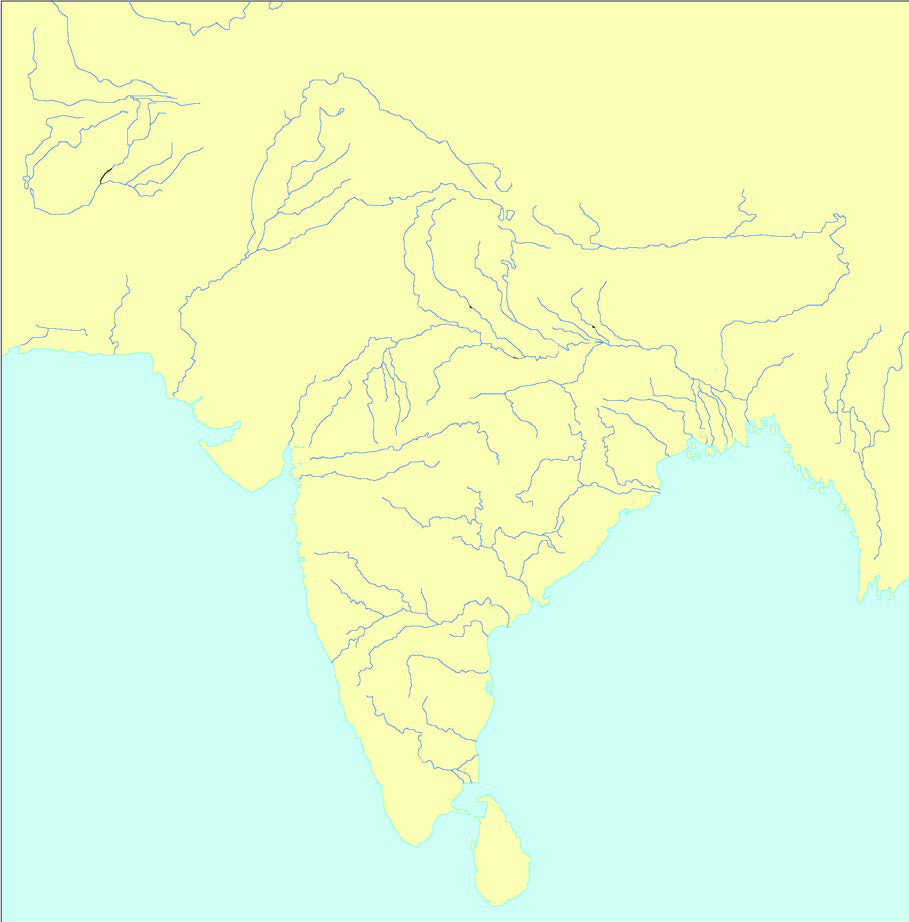<figcaption>Figure fig_ch03_p046_06 (Page 46)</figcaption></figure>
  <div class="page-content">
    <p>e…Dzšc<br>–šŒž—Dz”šȼc-<br>46<br>Œ­ŽDzŽšzDzś¡ź ‚sÅăڝ¢”•c gŦDz¡} “›“›… ‹šuā‘›Æ<br>†›Ž“…›<br>Žšz“c”āÇ<br>e…›sšŽĹ›Æ“ų<br>†Æs››Ž›Úų<br>‹žˆ}śÆ†›ųce“n¡‚š¡Ú¡ų§s¡Ĭś ¢Žt¡ƀ}Ĺs<br>”‚“š—†ŶšÅ<br>”šsŶšÅ<br>“šsš}sŶšÅ<br>užŶšÅ<br>s•š†ŶšÅ<br>¢xš‘ŶšÅ<br>¢xŽŶšÅ<br>ˆšįDzŶšÅ<br>z<br>z<br>z<br>z<br>z<br>z<br>z<br>z<br>‹žˆ}c</p>
  </div>
</section>
<section class="page-section" id="page-47">
  <div class="page-header"><span class="page-number">Page 47</span></div>
  <figure class="diagram-card" id="fig_ch03_p047_01"><figcaption>Figure fig_ch03_p047_01 (Page 47)</figcaption></figure>
  <figure class="diagram-card" id="fig_ch03_p047_02"><figcaption>Figure fig_ch03_p047_02 (Page 47)</figcaption></figure>
  <figure class="diagram-card" id="fig_ch03_p047_03"><figcaption>Figure fig_ch03_p047_03 (Page 47)</figcaption></figure>
  <figure class="diagram-card" id="fig_ch03_p047_04"><figcaption>Figure fig_ch03_p047_04 (Page 47)</figcaption></figure>
  <figure class="diagram-card" id="fig_ch03_p047_05"><figcaption>Figure fig_ch03_p047_05 (Page 47)</figcaption></figure>
  <figure class="diagram-card" id="fig_ch03_p047_06"><figcaption>Figure fig_ch03_p047_06 (Page 47)</figcaption></figure>
  <figure class="diagram-card" id="fig_ch03_p047_07"><figcaption>Figure fig_ch03_p047_07 (Page 47)</figcaption></figure>
  <figure class="diagram-card" id="fig_ch03_p047_08"><figcaption>Figure fig_ch03_p047_08 (Page 47)</figcaption></figure>
  <figure class="diagram-card" id="fig_ch03_p047_09"><figcaption>Figure fig_ch03_p047_09 (Page 47)</figcaption></figure>
  <figure class="diagram-card" id="fig_ch03_p047_10"><figcaption>Figure fig_ch03_p047_10 (Page 47)</figcaption></figure>
  <figure class="diagram-card" id="fig_ch03_p047_11"><figcaption>Figure fig_ch03_p047_11 (Page 47)</figcaption></figure>
  <figure class="diagram-card" id="fig_ch03_p047_12"><figcaption>Figure fig_ch03_p047_12 (Page 47)</figcaption></figure>
  <figure class="diagram-card" id="fig_ch03_p047_13"><figcaption>Figure fig_ch03_p047_13 (Page 47)</figcaption></figure>
  <figure class="diagram-card" id="fig_ch03_p047_14"><figcaption>Figure fig_ch03_p047_14 (Page 47)</figcaption></figure>
  <div class="page-content">
    <p>‹žŒ›„š†“cgŦDzÄ–Œž—“c<br>ǢšÄ¢Å§-&lt;<br>47<br>‹žŒ›„š†c(Land Grants)<br>g“Ž›Æ ښÄ ¢sůœsŽ›ă§ ‹Žc†}ś ”‚“š—†<br>ŽšzšÚŶšÅeų¡Ĺ–šŒž—›sv}†›ÆŒų›Æ†›ų›Žų<br>ƖšǦ¡ŽƂœ‚›¡ƀ}Ĺš†š›e“ÅÚ§‹žŒ›„š†c†Æsų<br>“Dz“ǚƩ§ ‚}Úcs›ă –› g †šDZ †žǯš¢Ĭš}sž}›<br>ˆš}œˆŅc¢sůŒšÚ›e…›sšŽĹ›Æ“ųužŽšzšÚŶš<br>Ž¡} sœ’›Æh“Dz“ǚ“›ˆŒšÚ¡ƀН<br>‹žŒ››¡“›‹“āÇڝǬ<br>e“sš”cŒšŅc†Æs›<br>‹žŒ››¡“›‹“ā¢‘š¡}šƀc<br>e“›¡}“–›Úų<br>z†ā‘¡}¢ŒǬ<br>e…›sšŽā‘c†Æs›<br>”‚“š—†ŶšÅ<br>‹žŒ›„š†Ĺ›¡ “Dz‚Dzš–c<br>užŶšÅ<br>užsšĹ›Æ‹žŒ›„š†Ƃ⛍›ž¡}iĬš<br>ŒšǯāÇm¡Ŧš¡Úš¡ų§¢†šÚšc<br>z „š†c¡xƮ¡ƀĞ‹žŒ››¡Žšzš“›¡ź–ǵš…œ†csĚ<br>z„š†c¡xƮ¡ƀ}ų‹žŒ››Æ†›ųǬ†›s‚›ˆ›Ž›“›†c†œ‚›†Dzš†›Å“—<br>Ĺ›†ŒǬe…›sšŽc‹ž“}Œǚ‚¡Úšƀc£sŒšǯc ¡xƮ¡ƀН<br>z„š†Œš›s›Ğų‹žŒ›‚āÇÚ§gǐŒǬ“ÅÚ§“œĬc „š†Œš›†Ƶš†Ǭ<br>e“sš”“c‹žŒ›„š†Œš›s›Ğ›“ÅÚ§ ‹›ă<br>z⢌ Žšzš“c Ƃ‹Ú‘c ‚āÇÚ§<br>‹›Úų ¢–“†āÇڝǬ<br>Ƃ‚›‰cˆŒš›†Ƶš¡‚‹žŒ›„š†Ĺ›¡źŽžˆĹ›Æ†Æs›Ĺ}ā›<br>z Žšzš“›Æ†›ų§nǯ“Œ…›sc‹žŒ›‹›ă‚§ƖšǦÅښ¡ÿ›c⢌<br>Œǯ“›‹šuāÇڝc ‹žŒ›„š†c‹›ă‚}ā›<br>už<br>ŽšzšÚŶšÅ<br>užŽšzDzś¡ź ǚšˆ<br>sÄ<br>NjœužÄ<br>f›<br>Žų Œǯ Ƃ…š† Žšzš<br>ÚŶšŽš›Žų<br>‹xůužÄpųšŒÄ<br>‹–ŒŝužÄ<br>‹xůužÄŽĬšŒÄ<br>‹sŒšŽužÄpųšŒÄ<br>‹ǘŭužÄ<br>ŶšÅ</p>
  </div>
</section>
<section class="page-section" id="page-48">
  <div class="page-header"><span class="page-number">Page 48</span></div>
  <figure class="diagram-card" id="fig_ch03_p048_01"><figcaption>Figure fig_ch03_p048_01 (Page 48)</figcaption></figure>
  <figure class="diagram-card" id="fig_ch03_p048_02"><figcaption>Figure fig_ch03_p048_02 (Page 48)</figcaption></figure>
  <figure class="diagram-card" id="fig_ch03_p048_03"><figcaption>Figure fig_ch03_p048_03 (Page 48)</figcaption></figure>
  <figure class="diagram-card" id="fig_ch03_p048_04"><figcaption>Figure fig_ch03_p048_04 (Page 48)</figcaption></figure>
  <figure class="diagram-card" id="fig_ch03_p048_05"><figcaption>Figure fig_ch03_p048_05 (Page 48)</figcaption></figure>
  <figure class="diagram-card" id="fig_ch03_p048_06"><figcaption>Figure fig_ch03_p048_06 (Page 48)</figcaption></figure>
  <figure class="diagram-card" id="fig_ch03_p048_07"><figcaption>Figure fig_ch03_p048_07 (Page 48)</figcaption></figure>
  <figure class="diagram-card" id="fig_ch03_p048_08"><figcaption>Figure fig_ch03_p048_08 (Page 48)</figcaption></figure>
  <figure class="diagram-card" id="fig_ch03_p048_09"><figcaption>Figure fig_ch03_p048_09 (Page 48)</figcaption></figure>
  <figure class="diagram-card" id="fig_ch03_p048_10"><figcaption>Figure fig_ch03_p048_10 (Page 48)</figcaption></figure>
  <figure class="diagram-card" id="fig_ch03_p048_11"><figcaption>Figure fig_ch03_p048_11 (Page 48)</figcaption></figure>
  <div class="page-content">
    <p>e…Dzšc<br>–šŒž—Dz”šȼc-<br>48<br>gā¡† ‹žŒ›„š†c “DzšˆsŒš¢‚š¡} –Œž—Ĺ›Æ “› –Ơŝc<br>–ǵš…œ†¢”•›ŒǬ‹ž“}Œs‘¡}”ÞŒšpŽ“›‹šucŽžˆc¡sšĬ<br>‹žŒ››Æ ˆ›¡}Úų e}›š‘Å e“sš”ā‘›ƽšĹ“Žc ‹ž“}<br>Œs‘¡}fNj›‚ŽŒš›ĹœÅųh“Dz“ǚ›‚››ÆsŕsŽcsŕ<br>s¡Ĺš’›š‘›s‘c e}›Œs‘c ‹žŒ››Æ ŠŰ›Ú¡ƀĞ ǚ›‚››<br>š›Žų e“Å p¢Ž ŒĴ›ÆĹ¡ų z†›Úsc zœ“›Úsc<br>ŒŽ›Úsc¡xƫe“Ž¡}i}ŒsÇڝ ¢“Ĭ›š§e“Åe…ǵš†›ă<br>‚Ņc–Œž—Ĺ›¡ź‚š¢’ĹĞ›Ǭg“Å¢Œ¢ĹНs‘›Ǭ“ÅÚ§<br>†›s‚›Ú ˆ¢Œ –­z†Dz¢–“†ā‘c †Æ¢sĬ‚Ĭš›Žų<br>h “Dz“ǚ›‚›¡ ͖šŒŦ“Dz“ǚэųc ÍgŦDzÄ ‰Dzž›–cÎ<br>mųc “›¢”•›ƀ›Úų gښĹ§ sšÅ•›sŽcuŧ ˆ¢Žšu‚›<br>Ƃs}Œš›Žų<br>Օ›¡}“DZšˆ†¡Ĺ–—š›ăv}sāÇ<br>z Օ›Úˆ¢šu›Ú¡ƀ}š¡‚ s›}ųƂ¢„”āÇ¢ˆšcՕ›Ú<br>ˆÞŒšÚ›<br>z ˆ‚› –šŒž—›s“Dz“ǚ›‚› Օ›Úš“”DzŒš ¡‚š’›Æ”Þ›<br>Ƃ„š†c¡xƫ<br>z Օ›¡} –š¢ÿ‚›s“›„Dz¡c sšš“ǚ¡c –cŠŰ›ă§<br>ƖšǦÅÚ§iĬš›Žųe›“§<br>z “›“›…‚ŽĹ›Ǭz¢–x†ŒšÅuāÇ<br>užsš¡Ĺ<br>z¢–x†<br>ŒšÅuāÇ<br>eÚНsÇ<br>uzšĹ›¡<br>–„Å”†‚}šsc<br>ǘŭužÄ<br>ˆ‚Ú›ƀ›‚<br>s‘cz–c‹Ž›<br>‹Œ’¡“Ǭc ¢”tŽ›ă<br>“ă§Օ›Úˆ¢šu›ă<br>‹„䛢ŦDz›Æz<br>–c‹Ž›sdž›Åƣ›ă<br>‹iĹ¢ŽŦDz›Æs‘<br>ādž›Åƣ›ă<br>v}›ũceŽvĞ
<br>pŽxâśÆv}›ƀ›ă<br>s}āÇxâcsÚ<br>¢ƠšÇ¡“ǬciÅś<br>ˆš}¢ĹÚ§p’›Úų<br>s†šsÇ<br>s›ǯ›Æ†›ų§iÅŝųzc<br>xšs‘›ž¡}Օ››}ā‘›Æ<br>mśă<br>Œ’¡“Ǭc<br>nǯ“cƂ…š†¡ƀĞ<br>z¢ǟš‚ǡ§<br>Օ›¡}“DZšˆ†¡Ĺ–—š›ăz¢–x†ŒšÅuāÇn¡‚š¡Ú¡ų§¢†šÚšc</p>
  </div>
</section>
<section class="page-section" id="page-49">
  <div class="page-header"><span class="page-number">Page 49</span></div>
  <figure class="diagram-card" id="fig_ch03_p049_01"><figcaption>Figure fig_ch03_p049_01 (Page 49)</figcaption></figure>
  <figure class="diagram-card" id="fig_ch03_p049_02"><figcaption>Figure fig_ch03_p049_02 (Page 49)</figcaption></figure>
  <figure class="diagram-card" id="fig_ch03_p049_03"><figcaption>Figure fig_ch03_p049_03 (Page 49)</figcaption></figure>
  <figure class="diagram-card" id="fig_ch03_p049_04"><figcaption>Figure fig_ch03_p049_04 (Page 49)</figcaption></figure>
  <figure class="diagram-card" id="fig_ch03_p049_05"><figcaption>Figure fig_ch03_p049_05 (Page 49)</figcaption></figure>
  <figure class="diagram-card" id="fig_ch03_p049_06"><figcaption>Figure fig_ch03_p049_06 (Page 49)</figcaption></figure>
  <figure class="diagram-card" id="fig_ch03_p049_07"><figcaption>Figure fig_ch03_p049_07 (Page 49)</figcaption></figure>
  <figure class="diagram-card" id="fig_ch03_p049_08"><figcaption>Figure fig_ch03_p049_08 (Page 49)</figcaption></figure>
  <figure class="diagram-card" id="fig_ch03_p049_09"><figcaption>Figure fig_ch03_p049_09 (Page 49)</figcaption></figure>
  <figure class="diagram-card" id="fig_ch03_p049_10"><figcaption>Figure fig_ch03_p049_10 (Page 49)</figcaption></figure>
  <figure class="diagram-card" id="fig_ch03_p049_11"><figcaption>Figure fig_ch03_p049_11 (Page 49)</figcaption></figure>
  <figure class="diagram-card" id="fig_ch03_p049_12"><figcaption>Figure fig_ch03_p049_12 (Page 49)</figcaption></figure>
  <figure class="diagram-card" id="fig_ch03_p049_13">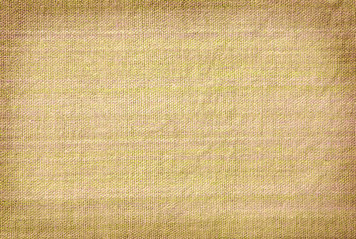<figcaption>Figure fig_ch03_p049_13 (Page 49)</figcaption></figure>
  <figure class="diagram-card" id="fig_ch03_p049_15"><figcaption>Figure fig_ch03_p049_15 (Page 49)</figcaption></figure>
  <div class="page-content">
    <p>‹žŒ›„š†“cgŦDzÄ–Œž—“c<br>ǢšÄ¢Å§-&lt;<br>49<br>£s¡Ĺš’›c“DzˆšŽ“c<br>‹žŒ›„š†Ĺ›¡ź<br>‰ŒšĬš<br>Օ›¡}<br>“Dzšˆ†c sšÅ•›¢s‚ŽƂ“Åņā‘¡} “›sš–Ĺ›¢Ú§ †›ă<br>“›“›…‚Žc£s¡Ĺš’›s¡‘z†āÇzœ“›‚ŒšÅuŒš›–ǵœsŽ›ă<br>ˆŽš“ǙÚ‘›Æ †›ųc –š—›‚DzՂ›s‘›Æ †›ųc gښ¡Ĺ<br>£s¡Ĺš’›s¡‘ڝ›ă§ †ŒÚ§ “›“Žc ‹›ÚųĬ§  iÆt††<br>ā‘›Æ †›ųc ‹›ă›ĞǬ ˆŽš“ǙÚ¡‘ڝ›ăǬ “›“Žc x“¡}<br>¢xÅĹ›ĞĬ§ g‚›Æ †›ų§ eښĹ§ †›†›ų›Žų £s¡Ĺš’›<br>sÇn¡‚š¡Úš¡ų§s¡ĬśˆĞ›sˆžÅśšÚž<br>s¡ĬśˆŽš“ǙÚÇ<br>£s¡Ĺš’›sÇ<br>zŒÃˆšŅāÇ<br>z ŒÃˆšŅ†›Åƣšc<br>z<br>–ǵÅĴc¡“Ǭ›“›ˆ›}›ƀǬsƽ§<br>mų›“›Æ‚œÅĹf‹ŽāÇ<br>z<br><br>zŒĹsÇ<br>z<br><br>zx›ƽ¡sšĬǬ“ǙÚÇ<br>z<br><br>zˆĞ§ˆŽĹ›“ȼāÇ<br>z<br><br>zf†¡ÚšƠ›Æ‚œÅĹ”›ƺāÇ<br>z<br><br>“›“›…<br>£s¡Ĺš’›s‘›Æ<br>nÅ¡ƀĞ“Å<br>e“Ž¡}sžĞš§ŒsÇŽžˆœsŽ›ăg“Íu›Æ<br>sÇÎeƒ“šÍ¢Nj›sÇÎmų§e›¡ƀН<br>‹Žsž}c ¢Nj›sÇÚ§ ecuœsšŽc †Ƶ›<br>¢Nj›s‘›¡ ecuāÇÚ§ e‚›¡ź †›Œ<br>āLjš›¢ÚĬ››Žų<br>v}›ũceŽvĞ
<br>užsšĹ§<br>gŦDz›Æ<br>Žžˆ¡ƀĞ –šŒŦ“Dz“ǚ›‚›<br>¡}–“›¢”•‚sÇxÅă<br>¡xƮs<br>¢Nj›sÇ<br>£s¡Ĺš’›sšŽ¡}c<br>să“}ښŽ<br>¡}c –cv}†š›Žų<br>¢Nj›sÇ<br>e–cȿ‚“ǙÚÇ ¢”tŽ›Ús iƈš<br>„†¡Ĺ<br>†›ũ›Ús<br>iƈųā¡‘<br>“›ˆ››¡Ĺ›Ús mų›“š›Žų<br>g“¡}xŒ‚sÇ</p>
  </div>
</section>
<section class="page-section" id="page-50">
  <div class="page-header"><span class="page-number">Page 50</span></div>
  <figure class="diagram-card" id="fig_ch03_p050_01"><figcaption>Figure fig_ch03_p050_01 (Page 50)</figcaption></figure>
  <figure class="diagram-card" id="fig_ch03_p050_02"><figcaption>Figure fig_ch03_p050_02 (Page 50)</figcaption></figure>
  <figure class="diagram-card" id="fig_ch03_p050_03">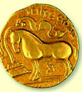<figcaption>Figure fig_ch03_p050_03 (Page 50)</figcaption></figure>
  <figure class="diagram-card" id="fig_ch03_p050_04"><figcaption>Figure fig_ch03_p050_04 (Page 50)</figcaption></figure>
  <figure class="diagram-card" id="fig_ch03_p050_05">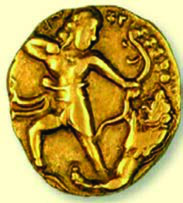<figcaption>Figure fig_ch03_p050_05 (Page 50)</figcaption></figure>
  <figure class="diagram-card" id="fig_ch03_p050_06"><figcaption>Figure fig_ch03_p050_06 (Page 50)</figcaption></figure>
  <figure class="diagram-card" id="fig_ch03_p050_07">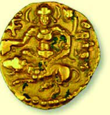<figcaption>Figure fig_ch03_p050_07 (Page 50)</figcaption></figure>
  <figure class="diagram-card" id="fig_ch03_p050_08">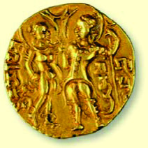<figcaption>Figure fig_ch03_p050_08 (Page 50)</figcaption></figure>
  <figure class="diagram-card" id="fig_ch03_p050_09"><figcaption>Figure fig_ch03_p050_09 (Page 50)</figcaption></figure>
  <figure class="diagram-card" id="fig_ch03_p050_10"><figcaption>Figure fig_ch03_p050_10 (Page 50)</figcaption></figure>
  <figure class="diagram-card" id="fig_ch03_p050_11"><figcaption>Figure fig_ch03_p050_11 (Page 50)</figcaption></figure>
  <figure class="diagram-card" id="fig_ch03_p050_12">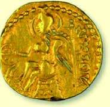<figcaption>Figure fig_ch03_p050_12 (Page 50)</figcaption></figure>
  <figure class="diagram-card" id="fig_ch03_p050_13"><figcaption>Figure fig_ch03_p050_13 (Page 50)</figcaption></figure>
  <figure class="diagram-card" id="fig_ch03_p050_14"><figcaption>Figure fig_ch03_p050_14 (Page 50)</figcaption></figure>
  <figure class="diagram-card" id="fig_ch03_p050_15"><figcaption>Figure fig_ch03_p050_15 (Page 50)</figcaption></figure>
  <figure class="diagram-card" id="fig_ch03_p050_16"><figcaption>Figure fig_ch03_p050_16 (Page 50)</figcaption></figure>
  <figure class="diagram-card" id="fig_ch03_p050_17"><figcaption>Figure fig_ch03_p050_17 (Page 50)</figcaption></figure>
  <figure class="diagram-card" id="fig_ch03_p050_18"><figcaption>Figure fig_ch03_p050_18 (Page 50)</figcaption></figure>
  <figure class="diagram-card" id="fig_ch03_p050_19"><figcaption>Figure fig_ch03_p050_19 (Page 50)</figcaption></figure>
  <figure class="diagram-card" id="fig_ch03_p050_20"><figcaption>Figure fig_ch03_p050_20 (Page 50)</figcaption></figure>
  <figure class="diagram-card" id="fig_ch03_p050_21"><figcaption>Figure fig_ch03_p050_21 (Page 50)</figcaption></figure>
  <figure class="diagram-card" id="fig_ch03_p050_22"><figcaption>Figure fig_ch03_p050_22 (Page 50)</figcaption></figure>
  <figure class="diagram-card" id="fig_ch03_p050_23"><figcaption>Figure fig_ch03_p050_23 (Page 50)</figcaption></figure>
  <figure class="diagram-card" id="fig_ch03_p050_24"><figcaption>Figure fig_ch03_p050_24 (Page 50)</figcaption></figure>
  <figure class="diagram-card" id="fig_ch03_p050_25"><figcaption>Figure fig_ch03_p050_25 (Page 50)</figcaption></figure>
  <figure class="diagram-card" id="fig_ch03_p050_26">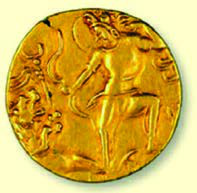<figcaption>Figure fig_ch03_p050_26 (Page 50)</figcaption></figure>
  <figure class="diagram-card" id="fig_ch03_p050_27">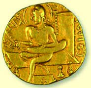<figcaption>Figure fig_ch03_p050_27 (Page 50)</figcaption></figure>
  <figure class="diagram-card" id="fig_ch03_p050_28"><figcaption>Figure fig_ch03_p050_28 (Page 50)</figcaption></figure>
  <div class="page-content">
    <p>e…Dzšc<br>–šŒž—Dz”šȼc-<br>50<br>“DzšˆšŽ“c“š›zDz“c<br>užsšĹ›¡ź ‚}ÚśÆ f‹DzŦŽ“š›zDzc “‘¡Ž “›ˆŒš›<br>ŽųՕ›Ú§ˆ¡Œ“›“›…£s¡Ĺš’›s‘csŽs­”†›Åƣš“c<br>†›†›ų›Žų‚š› ˆĞ›s›Æ †›ų§ Œ†ǡ›šÚ›¢ƽš sŽs­”<br>“›„u§…Å †›Åƣ›ă gŎc iƈųāÇ “DzšˆšŽĹ›¡ź<br>ŒtDz g†ā‘š›Žų nǯ“c<br>“› f‹DzŦŽ“DzšˆšŽ<br>“ǙÚ‘›¡šųš›Žų “ȼc “›“›… ‚ŽĹ›Ǭ “ȼ<br>āÇŒ–§›Äsš›¢sš›†Ä
“Ä¢‚š‚›Æ†›Åƣ›ă›Žų<br>ˆDž›¢Œ•Dz Œ¢…•Dz „䛁ˆžÅ¢“•Dz ¢DZ mų›“›}ā<br>‘Œš›užŶšÅÚ§“›¢„” “DzšˆšŽŠŰc†›†›ų›Žų<br>hsšvĞśÆˆ‚› “DzšˆšŽˆš‚sÇ“›s–›ă“ų<br>Œ›să–ǵÅĴ†šā‘c¡“Ǭ›¡xƠ§†šā‘cˆ<br>śÚ›†uŽ¢NjǑ›–šÅƒ“š—mųœ“DzšˆšŽƂŒtÅÚ§<br>‹ŽĹ›Æˆÿš‘›ĹŒĬš›Žų£“”š›ˆš}œˆŅc<br>s†­z§ Njš“Ǚ› s­–DZŠ› iċ›†› ŒƒŽ Œ‚š“<br>“DzšˆšŽƂš…š†DzŒǬˆĞā‘š›Žų<br>užsš†šāÇ(Gupta Coins)<br>†uŽĹšÅ<br>†uŽ¢NjǑ›Ä
<br>†uŽā‘›¡ –ƠųŽš<br>să“}ښŽšg“Å<br>‹ŽĹ›cˆÿš‘›s‘š<br>›Žųsž}š¡‚ “ÅĹs<br>–cvā‘›¡ƂŒtŽš<br>›ŽųgڞĞÅ<br>†</p>
  </div>
</section>
<section class="page-section" id="page-51">
  <div class="page-header"><span class="page-number">Page 51</span></div>
  <figure class="diagram-card" id="fig_ch03_p051_01"><figcaption>Figure fig_ch03_p051_01 (Page 51)</figcaption></figure>
  <figure class="diagram-card" id="fig_ch03_p051_02"><figcaption>Figure fig_ch03_p051_02 (Page 51)</figcaption></figure>
  <figure class="diagram-card" id="fig_ch03_p051_03"><figcaption>Figure fig_ch03_p051_03 (Page 51)</figcaption></figure>
  <figure class="diagram-card" id="fig_ch03_p051_04"><figcaption>Figure fig_ch03_p051_04 (Page 51)</figcaption></figure>
  <figure class="diagram-card" id="fig_ch03_p051_05"><figcaption>Figure fig_ch03_p051_05 (Page 51)</figcaption></figure>
  <figure class="diagram-card" id="fig_ch03_p051_06"><figcaption>Figure fig_ch03_p051_06 (Page 51)</figcaption></figure>
  <figure class="diagram-card" id="fig_ch03_p051_07"><figcaption>Figure fig_ch03_p051_07 (Page 51)</figcaption></figure>
  <figure class="diagram-card" id="fig_ch03_p051_08"><figcaption>Figure fig_ch03_p051_08 (Page 51)</figcaption></figure>
  <div class="page-content">
    <p>‹žŒ›„š†“cgŦDzÄ–Œž—“c<br>ǢšÄ¢Å§-&lt;<br>51<br>užsš¡Ĺx›Ƃ…š††uŽāÇ<br>z.....................................................................................................................................................................................<br>z.....................................................................................................................................................................................<br>z.....................................................................................................................................................................................<br>z.....................................................................................................................................................................................<br>z.....................................................................................................................................................................................<br>z.....................................................................................................................................................................................<br>z.....................................................................................................................................................................................<br>z....................................................................................................................................................................................<br>‹žˆ}c<br>‹žˆ}śÆ¢Žt¡ƀ}Ĺ››Ž›Úųužsš¡Ĺ†uŽāÇgų¡Ĺ<br>n¡‚š¡Ú–cǚš†ā‘›š¡ų§s¡Ĭŝs<br>ˆš}œˆŅc<br>s†­z§ Njš“Ǚ›<br>s­–DZŠ›<br>iċ›†›<br>ŒƒŽ<br>£“”š›</p>
  </div>
</section>
<section class="page-section" id="page-52">
  <div class="page-header"><span class="page-number">Page 52</span></div>
  <figure class="diagram-card" id="fig_ch03_p052_01"><figcaption>Figure fig_ch03_p052_01 (Page 52)</figcaption></figure>
  <figure class="diagram-card" id="fig_ch03_p052_02"><figcaption>Figure fig_ch03_p052_02 (Page 52)</figcaption></figure>
  <figure class="diagram-card" id="fig_ch03_p052_03"><figcaption>Figure fig_ch03_p052_03 (Page 52)</figcaption></figure>
  <figure class="diagram-card" id="fig_ch03_p052_04"><figcaption>Figure fig_ch03_p052_04 (Page 52)</figcaption></figure>
  <figure class="diagram-card" id="fig_ch03_p052_05"><figcaption>Figure fig_ch03_p052_05 (Page 52)</figcaption></figure>
  <div class="page-content">
    <p>e…Dzšc<br>–šŒž—Dz”šȼc-<br>52<br>–›g fšc†žǯš¢Ĭš¡} ¢šŒš–šƤšzDzc ‚sŽsc £x†ÚšŽ›Æ<br>†›ųcˆšDžš‚DzňН†›Åƣš“›„Dzˆ~›Úsc¡xƫ¢”•cgŦDz<br>¡}“›¢„”“š›zDzśÆ“›ŒšŭDzc–c‹“›ăg‚§f‹DzŦŽ<br>“š›zDz¡ĹcƂ‚›sžŒš›Šš…›ă£s¡Ĺš’›sšŽcsŽs­<br>”“›„DzښŽc<br>să“}ś†š›<br>ŽšzDzś¡ź<br>ˆ‹šuā‘›¢Ú§<br>†œāų‚›†§s““ųe“Å÷šŒā‘›Æ‚¡ųp‚ā›zœ“›ÚšÄ<br>‚}ā› g‚§ ss‘¡}c £s¡Ĺš’›s‘¡}c ÷šŒ“Æڎ<br>ś¢Ú§ †›ă  să“}ś¡ź ‚sÅ㍝c £s¡Ĺš’›s‘¡}<br>s“c÷šŒ“Æڎ“cˆƂ…š††uŽā‘¡}c‚sÅăƩ§sšŽ<br>Œš› s­–šcŠ› —Ǚ›†ˆŽc e—›ĄŅc ‚ä”› e¢š…Dz<br>iċ›†› ŒƒŽ ‚}ā› †uŽā‘¡}¡ƽšc Ƃ­€› †ǐ¡ƀН<br>–›g  eĕšc †žǯšĬ›¡ £x†›Æ †›ųǬ –ĕšŽ›š›Žų<br>‰š—›š¡ź“›“Žā‘›Æ“ĆuŽā‘š›“›¢”•›ƀ›ăˆ†u<br>Žā‘cn’šc†žǯšĬ›¡ £x†œ–§–ĕšŽ›š—šÄ–šā›¡ź<br>“›“Žā‘›Æ ÷šŒā‘šš§ “›“Ž›Úų‚§ eښĹĬš<br>†uŽā‘¡}‚sÅă¡–žx›ƀ›Úų‚š§h“›“Žc<br>–šŒž—›szœ“›‚c<br>užŶšŽ¡}sšĹ§Žžˆc¡sšĬ“›“›…¡‚š’›ÆڞĞā¡‘¢Nj›<br>sÇ
 ڝ›ă§ ŒƠ§ †ƣÇ xÅă¡xƫ“¢ƽš ˆ‚› ¡‚š’›ÆڞĞā<br>‘¡}cz†“›‹šuā‘¡}cs}ų“Ž“§†›Ž“…›iˆ“›‹šuā‘¡}<br>ŽžˆœsŽĹ›†§<br>sšŽŒš›<br>†›†›ų›Žų<br>“ÅĴ“Dz“ǚƩ§<br>ˆ‚‚š› iÅų“ų ¡‚š’›ÆڞĞā¡‘ iǡښǬšÄ  s’›š<br>¡‚“ų h –š—xŽDzśÆ q¢Žš ¡‚š’›ÆÚžĞ“c ˆ‚›zš‚›<br>s‘ciˆzš‚›s‘Œš›ĹœÅų“Dz‚DzǙ ¡‚š’›ÆڞĞāÇڝˆ¡Œ<br>e†Dz¢„”ā‘›Æ †›ų§ mś¢ăÅų“Å “†ā‘›Æ “–›ă›Žų“Å<br>†›•š„Å
 “Dz‚DzǙ zš‚››Æ¡ƀĞ“Å ‚ƣ›Ǭ “›“š—Ĺ›ž¡}<br>z†›Úų“Å mų›“¡Žƽšc ˆ‚› ˆ‚› zš‚›s‘š›ĹœÅų<br>eā¡†zš‚›“Dz“ǚsž}‚Æ–ÿœÅĴŒš›Œš›</p>
  </div>
</section>
<section class="page-section" id="page-53">
  <div class="page-header"><span class="page-number">Page 53</span></div>
  <figure class="diagram-card" id="fig_ch03_p053_01"><figcaption>Figure fig_ch03_p053_01 (Page 53)</figcaption></figure>
  <figure class="diagram-card" id="fig_ch03_p053_02"><figcaption>Figure fig_ch03_p053_02 (Page 53)</figcaption></figure>
  <figure class="diagram-card" id="fig_ch03_p053_03"><figcaption>Figure fig_ch03_p053_03 (Page 53)</figcaption></figure>
  <figure class="diagram-card" id="fig_ch03_p053_04"><figcaption>Figure fig_ch03_p053_04 (Page 53)</figcaption></figure>
  <figure class="diagram-card" id="fig_ch03_p053_05"><figcaption>Figure fig_ch03_p053_05 (Page 53)</figcaption></figure>
  <figure class="diagram-card" id="fig_ch03_p053_06"><figcaption>Figure fig_ch03_p053_06 (Page 53)</figcaption></figure>
  <figure class="diagram-card" id="fig_ch03_p053_07"><figcaption>Figure fig_ch03_p053_07 (Page 53)</figcaption></figure>
  <figure class="diagram-card" id="fig_ch03_p053_08"><figcaption>Figure fig_ch03_p053_08 (Page 53)</figcaption></figure>
  <figure class="diagram-card" id="fig_ch03_p053_09"><figcaption>Figure fig_ch03_p053_09 (Page 53)</figcaption></figure>
  <figure class="diagram-card" id="fig_ch03_p053_10"><figcaption>Figure fig_ch03_p053_10 (Page 53)</figcaption></figure>
  <figure class="diagram-card" id="fig_ch03_p053_11"><figcaption>Figure fig_ch03_p053_11 (Page 53)</figcaption></figure>
  <figure class="diagram-card" id="fig_ch03_p053_12"><figcaption>Figure fig_ch03_p053_12 (Page 53)</figcaption></figure>
  <figure class="diagram-card" id="fig_ch03_p053_13"><figcaption>Figure fig_ch03_p053_13 (Page 53)</figcaption></figure>
  <figure class="diagram-card" id="fig_ch03_p053_14"><figcaption>Figure fig_ch03_p053_14 (Page 53)</figcaption></figure>
  <div class="page-content">
    <p>‹žŒ›„š†“cgŦDzÄ–Œž—“c<br>ǢšÄ¢Å§-&lt;<br>53<br>gƂsšŽc Žžˆ¡ƀĞ “Dz“ǚ›Æ ƖšǦÅ<br>äŅ›Å£“”DzÅmų›“ÅÚ§–Œž—csƺ›ă›Žų<br>ǚš†Œš†āÇÚ§ Œšǯc“ų›ƽ n’šc †žǯš<br>Ĭ›Æ gŦDz –ŭŔ›ă £x†œ–§ –ĕšŽ›š<br>—šÄ–šw§”žŝ¡ŽՕ›ÚšÅmų§ “›¢”•›ƀ›<br>ڝųh“›“ŽāÇsšÅ•›s–Œž—Ĺ›Æ<br>”žŝŽ¡}e“ǚ¡–žx›ƀ›Úų‚š§<br>xš‚Å“ŁDz“Dz“ǚƩ§ˆĹš›ŽųÍeŦDzzÅÎ<br>mų “›‹šu¡Ĺ ¡‚šĞsž}šĹ“Žš›sÚšÚ›<br>eŦDzzŽ›Ænǯ“c‚š¡’š›sÚšÚ¡ƀĞ‚§<br>ÍxįšÅÎ mų NJ”š†ˆšsŽc ÍxÅƣsšŽÅÎ<br>mų ¢‚šÆjƩ›}ų “›‹šuā‘Œš›Žų<br>ȼœs‘¡}ˆ„“›<br>“sš}s š›š›Žų Ƃ‹š“‚›už¡¢ƀš¡<br>x›Žšč›ŒšÅf„Ž›Ú¡ƀĞ›Ž¡ųÿ›c¡ˆš‚¢“<br>ȼœs‘¡} †› “‘¡Ž ‚š’§ų‚š›Žų Žšč›<br>Œ‚Æ‚š¢’šĞ§mƽš“›‹šucȼœs‘cˆŽ•ŶšÅÚ§<br>“›¢…Žš›Ž›ÚcmųsŽ‚¡ƀĞ›Žųių‚<br>“›‹šuā‘›¡ ȼœÚ§ ¢ˆšc ¡ˆš‚¢“ –Œž—<br>śÆ iÅų ˆ„“›¢š ˆŽ›u†¢š ‹›ă›Ž<br>ų›ƽpŽƖšǦȼœÚ¢ˆšc ‹žŒ›„š†c¡xƮ<br>¡ƀĞ‚š›¡‚‘›“›ƽ<br>e†¢šŒƂ‚›¢šŒ<br>“›“š—āÇ<br>“›“›…zš‚›s‘›Æ¡ƀĞ“Å‚ƣ›<br>Ǭ“›“š—ā¡‘ڝ›ă§eŃ<br>”šȼśÆƂ‚›ˆš„›Úų<br>iÅų‚š›sÚšÚ¡ƀ}ų<br>zš‚››¡ˆŽ•†c‚š’§ų<br>‚š›sÚšÚ¡ƀ}ų<br>zš‚››¡ ȼœc‚ƣ›Ǭ<br>“›“š—ce†¢šŒ“›“š—c<br>mų›¡ƀ}ų<br>iÅų‚š›sÚšÚ¡ƀ}ų<br>zš‚››¡ ȼœc‚š’§ų‚š›<br>sÚšÚ¡ƀ}ųzš‚››¡<br>ˆŽ•†c‚ƣ›Ǭ“›“š—c<br>Ƃ‚›¢šŒ“›“š—cmų›<br>¡ƀ}ų<br>xįšÅ‰š—›š¡ź“›“Žā‘›Æ<br>xůužÄ ŽĬšŒ¡ź ‹ŽsšĹ§ –›g eĕšc †žǯšĬ§
 gŦDz –ŭŔ›ă<br>£x†›Æ †›ųǬ ŠŗŒ‚–ĕšŽ›š ‰š—›šÄ xįšŶš¡ŽÚ›ă§<br>gā¡† ˆų φuŽĹ›¢¢Úš s¢Ơš‘Ĺ›¢¢Úš Ƃ¢“”›Úų xįšÅ<br>pŽ ŒŽƀs›Æ e}›ă§ ”ƒŒĬšÚŒš›Žų g“Ž¡} “Ž“§ ŒÄsĞ› Œ†ǡ›<br>šÚ›¢ŒÆzš‚›ÚšÅÚ§Œš›†›ÆښÄ¢“Ĭ›š›Žųgā¡† ¡xƫ›Žų‚§Ð</p>
  </div>
</section>
<section class="page-section" id="page-54">
  <div class="page-header"><span class="page-number">Page 54</span></div>
  <figure class="diagram-card" id="fig_ch03_p054_01"><figcaption>Figure fig_ch03_p054_01 (Page 54)</figcaption></figure>
  <figure class="diagram-card" id="fig_ch03_p054_02"><figcaption>Figure fig_ch03_p054_02 (Page 54)</figcaption></figure>
  <figure class="diagram-card" id="fig_ch03_p054_03"><figcaption>Figure fig_ch03_p054_03 (Page 54)</figcaption></figure>
  <figure class="diagram-card" id="fig_ch03_p054_04"><figcaption>Figure fig_ch03_p054_04 (Page 54)</figcaption></figure>
  <figure class="diagram-card" id="fig_ch03_p054_05"><figcaption>Figure fig_ch03_p054_05 (Page 54)</figcaption></figure>
  <figure class="diagram-card" id="fig_ch03_p054_06"><figcaption>Figure fig_ch03_p054_06 (Page 54)</figcaption></figure>
  <figure class="diagram-card" id="fig_ch03_p054_07"><figcaption>Figure fig_ch03_p054_07 (Page 54)</figcaption></figure>
  <figure class="diagram-card" id="fig_ch03_p054_08"><figcaption>Figure fig_ch03_p054_08 (Page 54)</figcaption></figure>
  <figure class="diagram-card" id="fig_ch03_p054_09"><figcaption>Figure fig_ch03_p054_09 (Page 54)</figcaption></figure>
  <figure class="diagram-card" id="fig_ch03_p054_10"><figcaption>Figure fig_ch03_p054_10 (Page 54)</figcaption></figure>
  <figure class="diagram-card" id="fig_ch03_p054_11"><figcaption>Figure fig_ch03_p054_11 (Page 54)</figcaption></figure>
  <figure class="diagram-card" id="fig_ch03_p054_12"><figcaption>Figure fig_ch03_p054_12 (Page 54)</figcaption></figure>
  <figure class="diagram-card" id="fig_ch03_p054_13"><figcaption>Figure fig_ch03_p054_13 (Page 54)</figcaption></figure>
  <figure class="diagram-card" id="fig_ch03_p054_14"><figcaption>Figure fig_ch03_p054_14 (Page 54)</figcaption></figure>
  <figure class="diagram-card" id="fig_ch03_p054_15"><figcaption>Figure fig_ch03_p054_15 (Page 54)</figcaption></figure>
  <figure class="diagram-card" id="fig_ch03_p054_16"><figcaption>Figure fig_ch03_p054_16 (Page 54)</figcaption></figure>
  <figure class="diagram-card" id="fig_ch03_p054_17"><figcaption>Figure fig_ch03_p054_17 (Page 54)</figcaption></figure>
  <figure class="diagram-card" id="fig_ch03_p054_18"><figcaption>Figure fig_ch03_p054_18 (Page 54)</figcaption></figure>
  <figure class="diagram-card" id="fig_ch03_p054_19"><figcaption>Figure fig_ch03_p054_19 (Page 54)</figcaption></figure>
  <figure class="diagram-card" id="fig_ch03_p054_20"><figcaption>Figure fig_ch03_p054_20 (Page 54)</figcaption></figure>
  <figure class="diagram-card" id="fig_ch03_p054_21"><figcaption>Figure fig_ch03_p054_21 (Page 54)</figcaption></figure>
  <figure class="diagram-card" id="fig_ch03_p054_22"><figcaption>Figure fig_ch03_p054_22 (Page 54)</figcaption></figure>
  <figure class="diagram-card" id="fig_ch03_p054_23"><figcaption>Figure fig_ch03_p054_23 (Page 54)</figcaption></figure>
  <figure class="diagram-card" id="fig_ch03_p054_24"><figcaption>Figure fig_ch03_p054_24 (Page 54)</figcaption></figure>
  <figure class="diagram-card" id="fig_ch03_p054_25">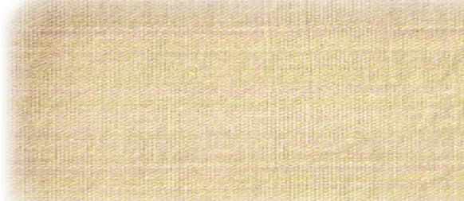<figcaption>Figure fig_ch03_p054_25 (Page 54)</figcaption></figure>
  <figure class="diagram-card" id="fig_ch03_p054_26"><figcaption>Figure fig_ch03_p054_26 (Page 54)</figcaption></figure>
  <div class="page-content">
    <p>e…Dzšc<br>–šŒž—Dz”šȼc-<br>54<br>užŽšzšÚŶšÅsœ’}ڛƂ¢„”ā‘›Æe“›}¡ĹŽšzšÚŶš¡Ž<br>‚ā‘¡}–šŒŦŶšŽš›sÚšÚ›‚}ŽšÄe†“„›ăe“ÅÚ§<br>–ǵc‹Žc †Æs› e“Ž¡} ‹ŽsšŽDzā‘›c ˆ›Ŧ}Å㍛c<br>užŽšzšÚŶšÅg}¡ˆĞ›Žų›ƽmųšÆ¢†Ž›Ğ‹Ž›ăƂ¢„”ā<br>‘›Æ“›ˆŒš‹Ž–c“›…š†cg“Å“›s–›ƀ›ă<br>užsšvĞś¡ Žšzš“›¡ź e…›sšŽ¡Ĺڝ›ăǬ m¡Ŧƽšc<br>“›“ŽāÇg‚›Æ†›ų§ ‹›Úc?<br>Ïs¢ŠŽ†c“Ž†cgů†ceŦs†c–Œ†š“†c<br>‚†›Ú¢ˆšųp¡Ž‚›Žš‘›c‹žŒtśƼšĹ“†c<br>užsš¡Ĺnǯ“c ”Þ†š‹Žš…›sšŽ›š›Žų<br>–Œŝuž¡†ƀǯ›Ǭe—Šš„›Æǚ›‚›¡xƮų<br>ƂšuƂ”Ǚ››Æ†›ųǬ“Ž›s‘š›‚§<br>zŽšzš“›¡†£„“–Œš††š›sÚšÚ›<br>z<br>užsš¡Ĺ‹Ž–c“›…š†“cŒ­ŽDzsš¡Ĺ‹Ž<br>–c“›…š†“c‚ƣ›Æ‚šŽ‚ŒDzc ¡xƫ§pŽs›ƀ§‚Ʈšš<br>ڝs<br>Žšȹc¢sůe…›sšŽ“cƂš¢„”›sš…›sšŽ“c<br>užsš¡Ĺ<br>÷šŒ‹Žc<br>užsš¡Ĺ÷šŒ<br>‹Žc†}ś›<br>Žų‚§Í÷šŒˆ‚›Î<br>eƒ“šÍ÷šŒš…Dz<br>äÄÎf›Žų<br>Í÷šŒƾŗÅÎmų›<br>¡ƀĞ›Žų÷šŒ<br>ŒtDzŽ¡} –cv<br>Œš§÷šŒĹ›¡<br>‚ÅÚāÇ‚œÅś<br>Žų‚§÷šŒĹ›Æ<br>Ƃ…š† z†“›‹šuc<br>sŕsŽš›Žų<br>ŒŽƀ›ÚšÅ<br>¡†§ŝsšÅ<br>sš›¢ŒÚų“Å<br>mų›“Žc<br>iĬš›Žų<br>g“Ž¡} –cv<br>āÇڝc÷šŒ‹Ž<br>śÆƂš‚›†›…Dzc<br>iĬš›Žų<br>f⌁ā‘›Æ†›ų§<br>Ƃzs¡‘ –cŽä›Ús<br>ƖšǦ¡ŽcNjŒ¡Žc<br>Šŗ£z† “›‹šuāÇ
eŠ¡Žc<br>–cŽä›Ús<br>†œ‚›†›Å“—c†}ŝs<br>“›ˆŒš e…›sšŽŒĬš›Žų“Žš§ užŽšzšÚŶšÅ e¢‚š<br>¡}šƀce“ÅÚ§x›iŎ“š„›‚ǵā‘ciĬš›Žųe“m¡Ŧ<br>ƽš¡Œų§¢†šÚDZ</p>
  </div>
</section>
<section class="page-section" id="page-55">
  <div class="page-header"><span class="page-number">Page 55</span></div>
  <figure class="diagram-card" id="fig_ch03_p055_01"><figcaption>Figure fig_ch03_p055_01 (Page 55)</figcaption></figure>
  <figure class="diagram-card" id="fig_ch03_p055_02"><figcaption>Figure fig_ch03_p055_02 (Page 55)</figcaption></figure>
  <figure class="diagram-card" id="fig_ch03_p055_03"><figcaption>Figure fig_ch03_p055_03 (Page 55)</figcaption></figure>
  <figure class="diagram-card" id="fig_ch03_p055_04"><figcaption>Figure fig_ch03_p055_04 (Page 55)</figcaption></figure>
  <figure class="diagram-card" id="fig_ch03_p055_05"><figcaption>Figure fig_ch03_p055_05 (Page 55)</figcaption></figure>
  <figure class="diagram-card" id="fig_ch03_p055_06"><figcaption>Figure fig_ch03_p055_06 (Page 55)</figcaption></figure>
  <figure class="diagram-card" id="fig_ch03_p055_07"><figcaption>Figure fig_ch03_p055_07 (Page 55)</figcaption></figure>
  <figure class="diagram-card" id="fig_ch03_p055_08"><figcaption>Figure fig_ch03_p055_08 (Page 55)</figcaption></figure>
  <figure class="diagram-card" id="fig_ch03_p055_09"><figcaption>Figure fig_ch03_p055_09 (Page 55)</figcaption></figure>
  <figure class="diagram-card" id="fig_ch03_p055_10"><figcaption>Figure fig_ch03_p055_10 (Page 55)</figcaption></figure>
  <figure class="diagram-card" id="fig_ch03_p055_11"><figcaption>Figure fig_ch03_p055_11 (Page 55)</figcaption></figure>
  <figure class="diagram-card" id="fig_ch03_p055_12"><figcaption>Figure fig_ch03_p055_12 (Page 55)</figcaption></figure>
  <figure class="diagram-card" id="fig_ch03_p055_13"><figcaption>Figure fig_ch03_p055_13 (Page 55)</figcaption></figure>
  <figure class="diagram-card" id="fig_ch03_p055_14"><figcaption>Figure fig_ch03_p055_14 (Page 55)</figcaption></figure>
  <figure class="diagram-card" id="fig_ch03_p055_15"><figcaption>Figure fig_ch03_p055_15 (Page 55)</figcaption></figure>
  <figure class="diagram-card" id="fig_ch03_p055_16"><figcaption>Figure fig_ch03_p055_16 (Page 55)</figcaption></figure>
  <figure class="diagram-card" id="fig_ch03_p055_17"><figcaption>Figure fig_ch03_p055_17 (Page 55)</figcaption></figure>
  <figure class="diagram-card" id="fig_ch03_p055_18"><figcaption>Figure fig_ch03_p055_18 (Page 55)</figcaption></figure>
  <figure class="diagram-card" id="fig_ch03_p055_19"><figcaption>Figure fig_ch03_p055_19 (Page 55)</figcaption></figure>
  <figure class="diagram-card" id="fig_ch03_p055_20"><figcaption>Figure fig_ch03_p055_20 (Page 55)</figcaption></figure>
  <figure class="diagram-card" id="fig_ch03_p055_21"><figcaption>Figure fig_ch03_p055_21 (Page 55)</figcaption></figure>
  <figure class="diagram-card" id="fig_ch03_p055_22"><figcaption>Figure fig_ch03_p055_22 (Page 55)</figcaption></figure>
  <figure class="diagram-card" id="fig_ch03_p055_23"><figcaption>Figure fig_ch03_p055_23 (Page 55)</figcaption></figure>
  <figure class="diagram-card" id="fig_ch03_p055_24"><figcaption>Figure fig_ch03_p055_24 (Page 55)</figcaption></figure>
  <figure class="diagram-card" id="fig_ch03_p055_25"><figcaption>Figure fig_ch03_p055_25 (Page 55)</figcaption></figure>
  <figure class="diagram-card" id="fig_ch03_p055_26"><figcaption>Figure fig_ch03_p055_26 (Page 55)</figcaption></figure>
  <figure class="diagram-card" id="fig_ch03_p055_27"><figcaption>Figure fig_ch03_p055_27 (Page 55)</figcaption></figure>
  <figure class="diagram-card" id="fig_ch03_p055_28"><figcaption>Figure fig_ch03_p055_28 (Page 55)</figcaption></figure>
  <figure class="diagram-card" id="fig_ch03_p055_29"><figcaption>Figure fig_ch03_p055_29 (Page 55)</figcaption></figure>
  <figure class="diagram-card" id="fig_ch03_p055_30"><figcaption>Figure fig_ch03_p055_30 (Page 55)</figcaption></figure>
  <figure class="diagram-card" id="fig_ch03_p055_31"><figcaption>Figure fig_ch03_p055_31 (Page 55)</figcaption></figure>
  <figure class="diagram-card" id="fig_ch03_p055_32"><figcaption>Figure fig_ch03_p055_32 (Page 55)</figcaption></figure>
  <figure class="diagram-card" id="fig_ch03_p055_33"><figcaption>Figure fig_ch03_p055_33 (Page 55)</figcaption></figure>
  <figure class="diagram-card" id="fig_ch03_p055_34"><figcaption>Figure fig_ch03_p055_34 (Page 55)</figcaption></figure>
  <figure class="diagram-card" id="fig_ch03_p055_35"><figcaption>Figure fig_ch03_p055_35 (Page 55)</figcaption></figure>
  <figure class="diagram-card" id="fig_ch03_p055_36"><figcaption>Figure fig_ch03_p055_36 (Page 55)</figcaption></figure>
  <figure class="diagram-card" id="fig_ch03_p055_37"><figcaption>Figure fig_ch03_p055_37 (Page 55)</figcaption></figure>
  <figure class="diagram-card" id="fig_ch03_p055_38"><figcaption>Figure fig_ch03_p055_38 (Page 55)</figcaption></figure>
  <figure class="diagram-card" id="fig_ch03_p055_39"><figcaption>Figure fig_ch03_p055_39 (Page 55)</figcaption></figure>
  <figure class="diagram-card" id="fig_ch03_p055_40"><figcaption>Figure fig_ch03_p055_40 (Page 55)</figcaption></figure>
  <figure class="diagram-card" id="fig_ch03_p055_41"><figcaption>Figure fig_ch03_p055_41 (Page 55)</figcaption></figure>
  <figure class="diagram-card" id="fig_ch03_p055_42"><figcaption>Figure fig_ch03_p055_42 (Page 55)</figcaption></figure>
  <figure class="diagram-card" id="fig_ch03_p055_43"><figcaption>Figure fig_ch03_p055_43 (Page 55)</figcaption></figure>
  <figure class="diagram-card" id="fig_ch03_p055_44"><figcaption>Figure fig_ch03_p055_44 (Page 55)</figcaption></figure>
  <figure class="diagram-card" id="fig_ch03_p055_45"><figcaption>Figure fig_ch03_p055_45 (Page 55)</figcaption></figure>
  <figure class="diagram-card" id="fig_ch03_p055_46"><figcaption>Figure fig_ch03_p055_46 (Page 55)</figcaption></figure>
  <figure class="diagram-card" id="fig_ch03_p055_47"><figcaption>Figure fig_ch03_p055_47 (Page 55)</figcaption></figure>
  <figure class="diagram-card" id="fig_ch03_p055_48"><figcaption>Figure fig_ch03_p055_48 (Page 55)</figcaption></figure>
  <figure class="diagram-card" id="fig_ch03_p055_49"><figcaption>Figure fig_ch03_p055_49 (Page 55)</figcaption></figure>
  <figure class="diagram-card" id="fig_ch03_p055_50"><figcaption>Figure fig_ch03_p055_50 (Page 55)</figcaption></figure>
  <figure class="diagram-card" id="fig_ch03_p055_51"><figcaption>Figure fig_ch03_p055_51 (Page 55)</figcaption></figure>
  <figure class="diagram-card" id="fig_ch03_p055_52"><figcaption>Figure fig_ch03_p055_52 (Page 55)</figcaption></figure>
  <figure class="diagram-card" id="fig_ch03_p055_53"><figcaption>Figure fig_ch03_p055_53 (Page 55)</figcaption></figure>
  <figure class="diagram-card" id="fig_ch03_p055_54"><figcaption>Figure fig_ch03_p055_54 (Page 55)</figcaption></figure>
  <figure class="diagram-card" id="fig_ch03_p055_55"><figcaption>Figure fig_ch03_p055_55 (Page 55)</figcaption></figure>
  <figure class="diagram-card" id="fig_ch03_p055_56"><figcaption>Figure fig_ch03_p055_56 (Page 55)</figcaption></figure>
  <figure class="diagram-card" id="fig_ch03_p055_57"><figcaption>Figure fig_ch03_p055_57 (Page 55)</figcaption></figure>
  <figure class="diagram-card" id="fig_ch03_p055_58"><figcaption>Figure fig_ch03_p055_58 (Page 55)</figcaption></figure>
  <figure class="diagram-card" id="fig_ch03_p055_59"><figcaption>Figure fig_ch03_p055_59 (Page 55)</figcaption></figure>
  <figure class="diagram-card" id="fig_ch03_p055_60"><figcaption>Figure fig_ch03_p055_60 (Page 55)</figcaption></figure>
  <figure class="diagram-card" id="fig_ch03_p055_61"><figcaption>Figure fig_ch03_p055_61 (Page 55)</figcaption></figure>
  <figure class="diagram-card" id="fig_ch03_p055_62"><figcaption>Figure fig_ch03_p055_62 (Page 55)</figcaption></figure>
  <figure class="diagram-card" id="fig_ch03_p055_63"><figcaption>Figure fig_ch03_p055_63 (Page 55)</figcaption></figure>
  <figure class="diagram-card" id="fig_ch03_p055_64"><figcaption>Figure fig_ch03_p055_64 (Page 55)</figcaption></figure>
  <figure class="diagram-card" id="fig_ch03_p055_65"><figcaption>Figure fig_ch03_p055_65 (Page 55)</figcaption></figure>
  <figure class="diagram-card" id="fig_ch03_p055_66"><figcaption>Figure fig_ch03_p055_66 (Page 55)</figcaption></figure>
  <figure class="diagram-card" id="fig_ch03_p055_67"><figcaption>Figure fig_ch03_p055_67 (Page 55)</figcaption></figure>
  <figure class="diagram-card" id="fig_ch03_p055_68"><figcaption>Figure fig_ch03_p055_68 (Page 55)</figcaption></figure>
  <figure class="diagram-card" id="fig_ch03_p055_69"><figcaption>Figure fig_ch03_p055_69 (Page 55)</figcaption></figure>
  <figure class="diagram-card" id="fig_ch03_p055_70"><figcaption>Figure fig_ch03_p055_70 (Page 55)</figcaption></figure>
  <figure class="diagram-card" id="fig_ch03_p055_71"><figcaption>Figure fig_ch03_p055_71 (Page 55)</figcaption></figure>
  <figure class="diagram-card" id="fig_ch03_p055_72"><figcaption>Figure fig_ch03_p055_72 (Page 55)</figcaption></figure>
  <figure class="diagram-card" id="fig_ch03_p055_73"><figcaption>Figure fig_ch03_p055_73 (Page 55)</figcaption></figure>
  <figure class="diagram-card" id="fig_ch03_p055_74"><figcaption>Figure fig_ch03_p055_74 (Page 55)</figcaption></figure>
  <figure class="diagram-card" id="fig_ch03_p055_75"><figcaption>Figure fig_ch03_p055_75 (Page 55)</figcaption></figure>
  <figure class="diagram-card" id="fig_ch03_p055_76"><figcaption>Figure fig_ch03_p055_76 (Page 55)</figcaption></figure>
  <figure class="diagram-card" id="fig_ch03_p055_77"><figcaption>Figure fig_ch03_p055_77 (Page 55)</figcaption></figure>
  <figure class="diagram-card" id="fig_ch03_p055_78"><figcaption>Figure fig_ch03_p055_78 (Page 55)</figcaption></figure>
  <figure class="diagram-card" id="fig_ch03_p055_79"><figcaption>Figure fig_ch03_p055_79 (Page 55)</figcaption></figure>
  <figure class="diagram-card" id="fig_ch03_p055_80"><figcaption>Figure fig_ch03_p055_80 (Page 55)</figcaption></figure>
  <figure class="diagram-card" id="fig_ch03_p055_81"><figcaption>Figure fig_ch03_p055_81 (Page 55)</figcaption></figure>
  <figure class="diagram-card" id="fig_ch03_p055_82"><figcaption>Figure fig_ch03_p055_82 (Page 55)</figcaption></figure>
  <figure class="diagram-card" id="fig_ch03_p055_83"><figcaption>Figure fig_ch03_p055_83 (Page 55)</figcaption></figure>
  <figure class="diagram-card" id="fig_ch03_p055_84"><figcaption>Figure fig_ch03_p055_84 (Page 55)</figcaption></figure>
  <figure class="diagram-card" id="fig_ch03_p055_85"><figcaption>Figure fig_ch03_p055_85 (Page 55)</figcaption></figure>
  <div class="page-content">
    <p>‹žŒ›„š†“cgŦDzÄ–Œž—“c<br>ǢšÄ¢Å§-&lt;<br>55<br>sc–š—›‚Dz“c<br>užsšvĞś¡–šŒž—›sŽšȹœ“›sš–ādžƣÇsĬ¢ƽšg‚›¢†š}§e†¢š<br>zDzŒš›†›ÆڝųŽœ‚››ÆgښvĞśÆsc–cȿ‚–š—›‚Dz“c“‘Åų“ų<br>“šǙ”›ƺ“›„Dzš›ŽųsšŽcuŧnǯ“cˆ¢Žšu‚›Ƃšˆ›ă‚§†›Ž“…›¢äŅāÇ<br>gښĹ§†›Åƣ›Ú¡ƀНe“¡}–“›¢”•‚sÇm¡Ŧš¡Úš›Žųmų§ ¢†šÚšc<br>„”š“‚šŽ¢äŅc¢„“§u€§<br>iĹÅƂ¢„”§<br>‚›uš“›¡“›ǒ¢äŅc<br>Œ…DzƂ¢„”§<br>†šx§†s‚šŽˆšÅ“‚›<br>¢äŅcˆųšŒ…DzƂ¢„”§<br>Ƃ”Ǚ›sÇ<br>ˆŽš‚†sš¡ĹgŦDzÄŽšzšÚŶšÅe“Ž¡} ¢†ĞāÇ¢vš•›Úš†š›sƽ›Æ¡sšĹ›“ă<br>›t›‚ā‘š§Ƃ”Ǚ›sÇe›¡ƀĞ‚›Ænǯ“cf„Dz¢Ĺ‚§–›gŽĬšc†žǯšĬ›Æ¡sšĹ›<br>“Ʃ¡ƀĞ Žŝ„šŒ¡ź z†u§ Ƃ”Ǚ›š§ e¢”šs xâ“Åś¡} z†u§ ”š–†Ĺ›¡ź<br>pŽ ‹šuŚš§ h Ƃ”Ǚ› ¡sšĹ›“㛎›Úų‚§  Žšzš“›¡† Ƃ”c–›Ús e¢Ŕ—Ĺ›¡ź<br>ŗ¢†Ğā¡‘ ƂsœÅśڝs ‚}ā›“š›Žų Ƃ”Ǚ›s‘¡} Ƃ¢‚Dzs‚sÇ Ƃ”Ǚ› m’<br>‚ųŽœ‚›ˆ‚›ŽžˆĹ›Æ„䛢ŦDz›¡ ¢xš‘Žšȹsž}xšžsDzˆƽ“ŽšzšÚŶšŽcˆ›Ŧ<br>}Åų›Žųe‚›”¢šÞ›iĬšs¡Œÿ›cpŽ‹ŽsÅŚ“›¡†ˆǯ›ǬxŽ›Ņ¢ŽtsÇmų<br>†››Æg“†¡ƣ–—š›Úų<br>ƂšuƂ”Ǚ›<br>užŽšzš“š–Œŝuž¡źf⌁āǍŗ“›zāÇmų›“¡ƂsœÅĹ›ă¡sšĬ§ ¡sšĹ›<br>“ă‚š§ Ƃšu Ƃ”Ǚ›  g‚§ e—Šš„§ Ƃ”Ǚ› mųc e›¡ƀ}ų –ŒŝužÄ “}Ú§<br>¢†ƀšÇŒ‚Æ¡‚Ú§‚Œ›’§†š}›¡źƂ¢„”āÇ“¡Žf⌛ă§sœ’§¡ƀ}Ĺ›‚›¡†hƂ”Ǚ›<br>›ÆƂsœÅśڝųuž–„ǡ›¡Žšzs“›š›Žų—Ž›¢–†Äf§–cȿ‚‹š•›Æh<br>Ƃ”Ǚ›m’‚›‚§<br>sšĹ›<br>Ĺ<br>x“¡}†Æs››Ž›Úųx›Ņādž›Žœä›ă§užsšvĞś¡<br>“šǙ“›„Dz¡}–“›¢”•‚sÇs¡ĬśˆĞ›s¡ƀ}Ĺs<br>zsƽcgǐ›sciˆ¢šu›<br>ăǬ¢äŅ†›Åƣ›‚›<br>z<br>¡sšĹˆ›sÇ<br>v}†š<br>¢äŅā<br>‘¡}†›Åƣ›‚›<br>(Structural <br>Temples)</p>
  </div>
</section>
<section class="page-section" id="page-56">
  <div class="page-header"><span class="page-number">Page 56</span></div>
  <figure class="diagram-card" id="fig_ch03_p056_01"><figcaption>Figure fig_ch03_p056_01 (Page 56)</figcaption></figure>
  <figure class="diagram-card" id="fig_ch03_p056_02"><figcaption>Figure fig_ch03_p056_02 (Page 56)</figcaption></figure>
  <figure class="diagram-card" id="fig_ch03_p056_03"><figcaption>Figure fig_ch03_p056_03 (Page 56)</figcaption></figure>
  <figure class="diagram-card" id="fig_ch03_p056_04"><figcaption>Figure fig_ch03_p056_04 (Page 56)</figcaption></figure>
  <figure class="diagram-card" id="fig_ch03_p056_05"><figcaption>Figure fig_ch03_p056_05 (Page 56)</figcaption></figure>
  <figure class="diagram-card" id="fig_ch03_p056_06"><figcaption>Figure fig_ch03_p056_06 (Page 56)</figcaption></figure>
  <figure class="diagram-card" id="fig_ch03_p056_07"><figcaption>Figure fig_ch03_p056_07 (Page 56)</figcaption></figure>
  <figure class="diagram-card" id="fig_ch03_p056_08"><figcaption>Figure fig_ch03_p056_08 (Page 56)</figcaption></figure>
  <figure class="diagram-card" id="fig_ch03_p056_09"><figcaption>Figure fig_ch03_p056_09 (Page 56)</figcaption></figure>
  <figure class="diagram-card" id="fig_ch03_p056_10"><figcaption>Figure fig_ch03_p056_10 (Page 56)</figcaption></figure>
  <figure class="diagram-card" id="fig_ch03_p056_11"><figcaption>Figure fig_ch03_p056_11 (Page 56)</figcaption></figure>
  <figure class="diagram-card" id="fig_ch03_p056_12"><figcaption>Figure fig_ch03_p056_12 (Page 56)</figcaption></figure>
  <figure class="diagram-card" id="fig_ch03_p056_13"><figcaption>Figure fig_ch03_p056_13 (Page 56)</figcaption></figure>
  <figure class="diagram-card" id="fig_ch03_p056_14"><figcaption>Figure fig_ch03_p056_14 (Page 56)</figcaption></figure>
  <figure class="diagram-card" id="fig_ch03_p056_15"><figcaption>Figure fig_ch03_p056_15 (Page 56)</figcaption></figure>
  <figure class="diagram-card" id="fig_ch03_p056_16"><figcaption>Figure fig_ch03_p056_16 (Page 56)</figcaption></figure>
  <figure class="diagram-card" id="fig_ch03_p056_17"><figcaption>Figure fig_ch03_p056_17 (Page 56)</figcaption></figure>
  <figure class="diagram-card" id="fig_ch03_p056_18"><figcaption>Figure fig_ch03_p056_18 (Page 56)</figcaption></figure>
  <figure class="diagram-card" id="fig_ch03_p056_19"><figcaption>Figure fig_ch03_p056_19 (Page 56)</figcaption></figure>
  <figure class="diagram-card" id="fig_ch03_p056_20">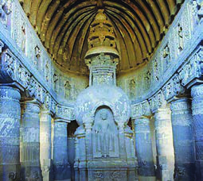<figcaption>Figure fig_ch03_p056_20 (Page 56)</figcaption></figure>
  <figure class="diagram-card" id="fig_ch03_p056_21"><figcaption>Figure fig_ch03_p056_21 (Page 56)</figcaption></figure>
  <figure class="diagram-card" id="fig_ch03_p056_22"><figcaption>Figure fig_ch03_p056_22 (Page 56)</figcaption></figure>
  <figure class="diagram-card" id="fig_ch03_p056_23"><figcaption>Figure fig_ch03_p056_23 (Page 56)</figcaption></figure>
  <figure class="diagram-card" id="fig_ch03_p056_24"><figcaption>Figure fig_ch03_p056_24 (Page 56)</figcaption></figure>
  <figure class="diagram-card" id="fig_ch03_p056_25"><figcaption>Figure fig_ch03_p056_25 (Page 56)</figcaption></figure>
  <figure class="diagram-card" id="fig_ch03_p056_26"><figcaption>Figure fig_ch03_p056_26 (Page 56)</figcaption></figure>
  <figure class="diagram-card" id="fig_ch03_p056_27"><figcaption>Figure fig_ch03_p056_27 (Page 56)</figcaption></figure>
  <figure class="diagram-card" id="fig_ch03_p056_28"><figcaption>Figure fig_ch03_p056_28 (Page 56)</figcaption></figure>
  <figure class="diagram-card" id="fig_ch03_p056_29"><figcaption>Figure fig_ch03_p056_29 (Page 56)</figcaption></figure>
  <figure class="diagram-card" id="fig_ch03_p056_30"><figcaption>Figure fig_ch03_p056_30 (Page 56)</figcaption></figure>
  <figure class="diagram-card" id="fig_ch03_p056_31"><figcaption>Figure fig_ch03_p056_31 (Page 56)</figcaption></figure>
  <figure class="diagram-card" id="fig_ch03_p056_32"><figcaption>Figure fig_ch03_p056_32 (Page 56)</figcaption></figure>
  <figure class="diagram-card" id="fig_ch03_p056_33"><figcaption>Figure fig_ch03_p056_33 (Page 56)</figcaption></figure>
  <figure class="diagram-card" id="fig_ch03_p056_34"><figcaption>Figure fig_ch03_p056_34 (Page 56)</figcaption></figure>
  <figure class="diagram-card" id="fig_ch03_p056_35"><figcaption>Figure fig_ch03_p056_35 (Page 56)</figcaption></figure>
  <figure class="diagram-card" id="fig_ch03_p056_36"><figcaption>Figure fig_ch03_p056_36 (Page 56)</figcaption></figure>
  <figure class="diagram-card" id="fig_ch03_p056_37"><figcaption>Figure fig_ch03_p056_37 (Page 56)</figcaption></figure>
  <figure class="diagram-card" id="fig_ch03_p056_38"><figcaption>Figure fig_ch03_p056_38 (Page 56)</figcaption></figure>
  <figure class="diagram-card" id="fig_ch03_p056_39"><figcaption>Figure fig_ch03_p056_39 (Page 56)</figcaption></figure>
  <figure class="diagram-card" id="fig_ch03_p056_40"><figcaption>Figure fig_ch03_p056_40 (Page 56)</figcaption></figure>
  <figure class="diagram-card" id="fig_ch03_p056_41"><figcaption>Figure fig_ch03_p056_41 (Page 56)</figcaption></figure>
  <figure class="diagram-card" id="fig_ch03_p056_42"><figcaption>Figure fig_ch03_p056_42 (Page 56)</figcaption></figure>
  <figure class="diagram-card" id="fig_ch03_p056_43"><figcaption>Figure fig_ch03_p056_43 (Page 56)</figcaption></figure>
  <figure class="diagram-card" id="fig_ch03_p056_44"><figcaption>Figure fig_ch03_p056_44 (Page 56)</figcaption></figure>
  <figure class="diagram-card" id="fig_ch03_p056_45"><figcaption>Figure fig_ch03_p056_45 (Page 56)</figcaption></figure>
  <figure class="diagram-card" id="fig_ch03_p056_46"><figcaption>Figure fig_ch03_p056_46 (Page 56)</figcaption></figure>
  <figure class="diagram-card" id="fig_ch03_p056_47"><figcaption>Figure fig_ch03_p056_47 (Page 56)</figcaption></figure>
  <figure class="diagram-card" id="fig_ch03_p056_48"><figcaption>Figure fig_ch03_p056_48 (Page 56)</figcaption></figure>
  <figure class="diagram-card" id="fig_ch03_p056_49"><figcaption>Figure fig_ch03_p056_49 (Page 56)</figcaption></figure>
  <figure class="diagram-card" id="fig_ch03_p056_50"><figcaption>Figure fig_ch03_p056_50 (Page 56)</figcaption></figure>
  <div class="page-content">
    <p>e…Dzšc<br>–šŒž—Dz”šȼc-<br>56<br>už‹ŽsšĹ§ –cȿ‚–š—›‚Dzś†§ Žšzsœ¢ƂšŇš—†c<br>‹›ă–cȿ‚c‹Ž‹š•š›Žųˆš›¢ˆš¡z†sœ‹š•iˆ<br>¢šu›ă›ŽųŠŗŒ‚ښŢˆšc–cȿ‚Ĺ›ÆŽx†sdž}ś<br>ŽšŒš“c Œ—š‹šŽ‚“c Œ›Ú ˆŽšā‘c x›Ğ¡ƀ}Ĺ›‚§<br>“š¡Œš’››Æ†›ų§“Ž¡Œš’››¢Ú§ Œšǯ¡ƀĞ‚§
gښĹš§<br>¢šsƂ”ǙŒšezŦ›¡Œ—šŽšȹ
u—šx›Ņā‘›Æužsš<br>ŧ ‚ƮššÚ¡ƀĞ“ŒĬ§ Žšzsœzœ“›‚c Žšz–„ǡ§ e‚›Œš†<br>•zœ“›sÇ mų›“ g“›Æ x›ŅœsŽ“›•ŒšsųĬ§ e“›Æ<br>ŽšŒšŒ—š‹šŽ‚Žcuā‘cg‚›ƾĹā‘š§e¢†s†žǯšĬs¡‘<br>e‚›zœ“›ă§gųc ‹cu›š›†›†›Æڝųhx›ŅāÇn¡c<br>‚ƮššÚ¡ƀĞ‚§ ƂՂ›„Ĺ“ÅĴāÇ¡sšĬš§<br>už‹Žsš¡Ĺ ¢äŅā‘¡}cu—šx›Ņā<br>‘¡}c pŽ ›z›ǯÆ ˆ‚›ƀ§ ‚ƮššÚ› Ƃ„Å”›<br>ƀ›Ús</p>
  </div>
</section>
<section class="page-section" id="page-57">
  <div class="page-header"><span class="page-number">Page 57</span></div>
  <figure class="diagram-card" id="fig_ch03_p057_01"><figcaption>Figure fig_ch03_p057_01 (Page 57)</figcaption></figure>
  <figure class="diagram-card" id="fig_ch03_p057_02"><figcaption>Figure fig_ch03_p057_02 (Page 57)</figcaption></figure>
  <figure class="diagram-card" id="fig_ch03_p057_03"><figcaption>Figure fig_ch03_p057_03 (Page 57)</figcaption></figure>
  <figure class="diagram-card" id="fig_ch03_p057_04"><figcaption>Figure fig_ch03_p057_04 (Page 57)</figcaption></figure>
  <figure class="diagram-card" id="fig_ch03_p057_05"><figcaption>Figure fig_ch03_p057_05 (Page 57)</figcaption></figure>
  <figure class="diagram-card" id="fig_ch03_p057_06"><figcaption>Figure fig_ch03_p057_06 (Page 57)</figcaption></figure>
  <figure class="diagram-card" id="fig_ch03_p057_07"><figcaption>Figure fig_ch03_p057_07 (Page 57)</figcaption></figure>
  <div class="page-content">
    <p>‹žŒ›„š†“cgŦDzÄ–Œž—“c<br>ǢšÄ¢Å§-&lt;<br>57<br>–cȿ‚‹š•›Æ†š}sāÇsš“DzāÇ“DzšsŽc†›vĬ‚}ā›“<br>gښĹ§Žx›Ú¡ƀНg“›ÆƂ…š†¡ƀĞx›‚§x“¡}†Æsų<br>÷Ū†šŒc<br>÷ŪsÅŚ“§<br>–š—›‚Dz“›‹šuc<br>e‹›čš†”šsŦ‘c<br>sš‘›„š–Ä<br>†š}sc<br>sŒšŽ–c‹“c<br>sš‘›„š–Ä<br>sš“Dzc<br>ƜĄs}›sc<br>”žŝsÄ<br>†š}sc<br>–ǵſ“š–“„Ĺc<br>‹š–Ä<br>†š}sc<br>Ņ›sšį›<br>‹ÅĶ—Ž›<br>“DzšsŽc<br>eŒŽ¢sš”c<br>eŒŽ–›c—Ä<br>†›vĬ<br>–cȿ‚†š}sāÇ ¢šsƂ–›ŗŒš¡ÿ›c e“ e“‚Ž›ƀ›Ú<br>¢ƠšÇ ių‚ ˆŽ•sƒšˆšŅāÇ ŒšŅ¢Œ –cȿ‚‹š• –c–šŽ›ă›<br>ŽųǬž Žšč›}ڌǬ ȼœs‘c ‚š’§ų‚š› sÚšÚ¡ƀĞ<br>zš‚›s‘›¡ˆŽ•sƒšˆšŅā‘cƂšÕ‚§‹š•ˆŒš›Žų<br>gŦDzÄ ‚‚ǵx›ŦƩ§ e}›ǚš†Œ›Ğ x› „Å”†ā‘c h sšvĞ<br>śÆiÅų“ų•§„Å”†āÇ (Six Systems of Philosophy) mų§<br>e›¡ƀĞ g“ ˆŽǝŽ –c“š„ā‘›ž¡}š§ Žžˆ¡ƀН“ų‚§<br>f„Å”†ā¡‘ce“¡}“ÞšÚ¡‘c†ŒÚ§ˆŽ›x¡ƀ}šc<br>„Å”†c<br>“Þš“§<br>–šctDz<br>sˆ›Ä<br>¢šu<br>ˆ‚ꐛ<br>†Dzš<br>u­‚ŒÄ<br>£“¢”•›s<br>sš„Ä<br>¢“„šŦ<br>Šš„Žš<br>ŒœŒšc–<br>£zŒ›†›</p>
  </div>
</section>
<section class="page-section" id="page-58">
  <div class="page-header"><span class="page-number">Page 58</span></div>
  <figure class="diagram-card" id="fig_ch03_p058_01"><figcaption>Figure fig_ch03_p058_01 (Page 58)</figcaption></figure>
  <figure class="diagram-card" id="fig_ch03_p058_02"><figcaption>Figure fig_ch03_p058_02 (Page 58)</figcaption></figure>
  <figure class="diagram-card" id="fig_ch03_p058_03"><figcaption>Figure fig_ch03_p058_03 (Page 58)</figcaption></figure>
  <figure class="diagram-card" id="fig_ch03_p058_04"><figcaption>Figure fig_ch03_p058_04 (Page 58)</figcaption></figure>
  <figure class="diagram-card" id="fig_ch03_p058_05"><figcaption>Figure fig_ch03_p058_05 (Page 58)</figcaption></figure>
  <figure class="diagram-card" id="fig_ch03_p058_06"><figcaption>Figure fig_ch03_p058_06 (Page 58)</figcaption></figure>
  <figure class="diagram-card" id="fig_ch03_p058_07"><figcaption>Figure fig_ch03_p058_07 (Page 58)</figcaption></figure>
  <figure class="diagram-card" id="fig_ch03_p058_08"><figcaption>Figure fig_ch03_p058_08 (Page 58)</figcaption></figure>
  <figure class="diagram-card" id="fig_ch03_p058_09"><figcaption>Figure fig_ch03_p058_09 (Page 58)</figcaption></figure>
  <figure class="diagram-card" id="fig_ch03_p058_10"><figcaption>Figure fig_ch03_p058_10 (Page 58)</figcaption></figure>
  <figure class="diagram-card" id="fig_ch03_p058_11"><figcaption>Figure fig_ch03_p058_11 (Page 58)</figcaption></figure>
  <figure class="diagram-card" id="fig_ch03_p058_12"><figcaption>Figure fig_ch03_p058_12 (Page 58)</figcaption></figure>
  <figure class="diagram-card" id="fig_ch03_p058_13"><figcaption>Figure fig_ch03_p058_13 (Page 58)</figcaption></figure>
  <figure class="diagram-card" id="fig_ch03_p058_14"><figcaption>Figure fig_ch03_p058_14 (Page 58)</figcaption></figure>
  <figure class="diagram-card" id="fig_ch03_p058_15"><figcaption>Figure fig_ch03_p058_15 (Page 58)</figcaption></figure>
  <figure class="diagram-card" id="fig_ch03_p058_16"><figcaption>Figure fig_ch03_p058_16 (Page 58)</figcaption></figure>
  <figure class="diagram-card" id="fig_ch03_p058_17"><figcaption>Figure fig_ch03_p058_17 (Page 58)</figcaption></figure>
  <div class="page-content">
    <p>e…Dzšc<br>–šŒž—Dz”šȼc-<br>58<br>¢š—–cǘŽc<br>–›g†ššc†žǯšĬ›Æ†›Åƣ›ăƗ›<br>Ú}Ĺ§Œ—§­‘››Æ†›ÆڝųgŽƠ<br>Ǚc‹c eښ¡Ĺ ¢š—–cǘŽ<br>–š¢ÿ‚›s“›„DzÚ§ i„š—ŽŒš§<br>†žǯšĬs‘š›Œ’c¡“›¢Œǯ§†›Æ<br>ڝųhgŽƠǙc‹cg¢ƀš’c‚Ž<br>Ơ›Úš¡‚†›†›Æڝų<br>”šȼc<br>užsšĹ§”šȼ÷Ūā‘cŽx›Ú¡ƀĞ›Žųg“Ƃ…š†Œšc<br>¢zDzš‚›”šȼc u›‚c £“„Dz”šȼc mųœ ¢Œts‘›š›Žų<br>“Žš—Œ›—›Ž¡ź Ə—‚§–c—›‚c fŽDz‹}¡ź fŽDz‹}œ“c<br>eŒŽ–›c—¡ź eŒŽ¢sš”“c gښĹ§ Žx›Ú¡ƀĞ Ƃ…š†<br>”šȼ÷Ūā‘š§<br>„䛢ŦDz›¢Ú§<br>užŽšzšÚŶšÅ ƖšǦÅÚ§ ‹žŒ›„š†c †Æs›‚›¡†Ú›ă ŒƠ§<br>xÅă¡xƫ“¢ƽš–›gfšc†žǯš¢Ĭš¡}‹žŒ›„š†c¡xƮųˆ‚›“§<br>„䛢ŦDz›¢Ú§ “Dzšˆ›ăg‚›†sšŽciĹ¢ŽŦDz›Æ†›ųc<br>„䛢ŦDz›¢ÚǬƖšǦŽ¡}s}›¢ǯŒš§ˆƽ“ŽcˆšįDz<br>ŽŒš›Žų gښĹ§ „䛢ŦDz›¡ Ƃ…š† Žšz“c”āÇ<br>e“Å ƖšǦÅڝc<br>¢äŅāÇڝc ‹žŒ› „š†c¡xƫ g‚›¡ź<br>‰Œš›<br>„䛢ŦDz›¡<br>–Œž—Ĺ›c<br>–Ơ„§“Dz“ǚ›c<br>ƖšǦÅÚ§ iÅųǚš†c ‹›ă ƖšǦÅÚ§ ‹žŒ›„š†c ¡xƫ‚§<br>hƂ¢„”ā‘›ÆՕ›“›s–›Úų‚›†§sšŽŒš›ŒƠ§–žx›ƀ›<br>㛎ų¢ˆš¡ ƖšǦÅÚ§ Օ›¡} –š¢ÿ‚›s“›„Dz¡Ú›ăc<br>sšš“ǚ¡Ú›ăŒĬš›Žų e›“§  Օ›¡} “Dzšˆ†Ĺ›†§<br>–—šsŒš› ŽšzšÚŶšŽc ÷šŒ‹Žsž}ā‘c z–c‹Ž›sÇ<br>†›Åƣ›ăcz¢–x†–c“›…š†cpŽÚ›cՕ›¡ ¢ƂšŇš—›ƀ›ă<br>užsšvĞś¡ ”šȼŽcu¡Ĺ –c‹š“†sÇ<br>“››ŽĹs</p>
  </div>
</section>
<section class="page-section" id="page-59">
  <div class="page-header"><span class="page-number">Page 59</span></div>
  <figure class="diagram-card" id="fig_ch03_p059_01"><figcaption>Figure fig_ch03_p059_01 (Page 59)</figcaption></figure>
  <figure class="diagram-card" id="fig_ch03_p059_02"><figcaption>Figure fig_ch03_p059_02 (Page 59)</figcaption></figure>
  <figure class="diagram-card" id="fig_ch03_p059_03"><figcaption>Figure fig_ch03_p059_03 (Page 59)</figcaption></figure>
  <figure class="diagram-card" id="fig_ch03_p059_04"><figcaption>Figure fig_ch03_p059_04 (Page 59)</figcaption></figure>
  <figure class="diagram-card" id="fig_ch03_p059_05"><figcaption>Figure fig_ch03_p059_05 (Page 59)</figcaption></figure>
  <figure class="diagram-card" id="fig_ch03_p059_06"><figcaption>Figure fig_ch03_p059_06 (Page 59)</figcaption></figure>
  <figure class="diagram-card" id="fig_ch03_p059_07"><figcaption>Figure fig_ch03_p059_07 (Page 59)</figcaption></figure>
  <figure class="diagram-card" id="fig_ch03_p059_08"><figcaption>Figure fig_ch03_p059_08 (Page 59)</figcaption></figure>
  <figure class="diagram-card" id="fig_ch03_p059_09"><figcaption>Figure fig_ch03_p059_09 (Page 59)</figcaption></figure>
  <figure class="diagram-card" id="fig_ch03_p059_10"><figcaption>Figure fig_ch03_p059_10 (Page 59)</figcaption></figure>
  <figure class="diagram-card" id="fig_ch03_p059_11"><figcaption>Figure fig_ch03_p059_11 (Page 59)</figcaption></figure>
  <figure class="diagram-card" id="fig_ch03_p059_12"><figcaption>Figure fig_ch03_p059_12 (Page 59)</figcaption></figure>
  <figure class="diagram-card" id="fig_ch03_p059_13"><figcaption>Figure fig_ch03_p059_13 (Page 59)</figcaption></figure>
  <div class="page-content">
    <p>‹žŒ›„š†“cgŦDzÄ–Œž—“c<br>ǢšÄ¢Å§-&lt;<br>59<br>ƖšǦŽ¡} †›ũĹ›š›Žų ¢äŅā‘¡} g}¡ˆ}<br>›¡ź ‰Œš› ˆƽ“ŽšzDzŧ sšÅ•›sˆ¢Žšu‚›Ĭš›<br>Օ››¡iƈš„†Œ›ăc“DzšˆšŽĹ›¡źˆ¢Žšu‚›ÚsšŽ<br>Œš›f‹DzŦŽ“DzšˆšŽĹ›¡†š¡}šƀc–Œŝ“DzšˆšŽ“c“‘Åų<br>Œ—šŠ›ˆŽc ˆƽ“Ž¡}‚›Ž¢Ú›‚ŒtŒš›Žų†šu<br>ˆĞŒš›ŽųŒ¡ǯšŽ‚ŒtcˆšįDzŽšzDz¡Ĺ “DzšˆšŽ<br>ś¡ź–“›¢”•‚š›Žų“›s–Œž—āÇiĹ¢ŽŦDz<br>›Æ ¢Nj›sÇ mų›¡ƀĞ să“}sžĞš§ŒsÇ „䛢<br>ŦDz›Æ“›s–Œž—ā¡‘ų§e›¡ƀНq¢Žšiƈųś<br>¡źc “DzšˆšŽĹ›Æq¢Žš“›s–cvc Njŗ¢sůœsŽ›ă<br>͆uŽĹšÅΌšÅ“DzšˆšŽ›s‘š›ŽųsŽŒ‘s§xŭ†c–ǵÅĴc<br>ŒĹ§ mų›“š›Žų ˆšįDzŽ¡} Ƃ…š† sǯŒ‚››†<br>āÇ¢sšÅ£ssšÆˆĞc¡ˆŽ›ˆĞcŒ‚š‚<br>ŒtāÇ“’›¢šŒÄ÷œÚ§£x†œ–§eŠ›“DzšˆšŽ›s‘Œš›<br>ˆšįDzÅ să“}c †}ś¢ƀšų Օ›¡} “Dzšˆ†“c<br>“DzšˆšŽ“‘Å㍝c “Dz‚DzǙ¡‚š’›s‘c ˆƽ“ - ˆšįDz ŽšzDz<br>āÇÚ§<br>†›s‚›ŒšÅuā‘š›<br>Œš›<br>‹ž†›s‚›š›Žų<br>Ƃ…š†c g‚§ “›‘“›¡ź<br>1<br>10<br>Œ‚Æ<br>1<br>6 “¡Ž †ÆsŒš›<br>Žų“Dz‚DzǙ¡‚š’›sÇ¡xƮų“ņ›s‚›e}ƩŒš›<br>Žų ¢äŅś† „š†c¡xƮ¡ƀĞ ƖǦ¢„c ƖšǦÅ<br>‚šŒ–ŒšÚ›e÷—šŽcmų›“Ú§‹ž†›s‚›p’›“šÚ››Žų<br>ƖǦ–ǵceƒ“š<br>ƖǦ¢„c<br>pŽsžĞcƖšǦÅÚ§<br>„š†Œš›†Æڝų<br>‹žŒ›¡ ƖǦ¢„c<br>mų“›‘›Úų<br>e÷—šŽc<br>ƖšǦ÷šŒāÇ<br>e÷—šŽāÇmų›<br>¡ƀН<br>¢„“–ǵceƒ“š<br>¢„“„š†c<br>¢„“†§eƒ“š¢äŅ<br>ś†§„š†c ¡xƮ¡ƀĞ<br>‹žŒ›¢„“„š†cmų§<br>“›‘›Ú¡ƀН¢äŅc<br>†}śƀsšŽš§h<br>‹žŒ›c ¢†šÚ›<br>†}ś›Žų‚§<br>g†›†ŒÚ§„䛢ŦDz›¡–šŒž—›s–šcǘšŽ›szœ“›‚¡Ĺƀǯ›<br>xÅă¡xƮšc<br>ˆƽ“ˆšįDz Ƃ¢„”ā‘›¡ –Œž—c zš‚›“Dz“ǚ›Æ e…›Ǒ›‚<br>Œš›Žų ÍƖǦ¢„āÇÎ mų¢ˆŽ›Æ …šŽš‘Œš› ‹žŒ›„š†c ‹›ă<br>ƖšǦÅ –ƠųŽc –Œž—Ĺ›Æ ių‚ǚš†ŒǬ“ŽŒš›Žų<br>„䛢ŦDz›¢ÚǬ ‹žŒ›„š†Ĺ›¡ź “Dzšˆ†c g“›}¡Ĺ –šƠ<br>śsŽcuŧ“ŽĹ›ŒšǯāÇxÅă¡xƮs</p>
  </div>
</section>
<section class="page-section" id="page-60">
  <div class="page-header"><span class="page-number">Page 60</span></div>
  <figure class="diagram-card" id="fig_ch03_p060_01"><figcaption>Figure fig_ch03_p060_01 (Page 60)</figcaption></figure>
  <figure class="diagram-card" id="fig_ch03_p060_02"><figcaption>Figure fig_ch03_p060_02 (Page 60)</figcaption></figure>
  <figure class="diagram-card" id="fig_ch03_p060_03"><figcaption>Figure fig_ch03_p060_03 (Page 60)</figcaption></figure>
  <figure class="diagram-card" id="fig_ch03_p060_04"><figcaption>Figure fig_ch03_p060_04 (Page 60)</figcaption></figure>
  <figure class="diagram-card" id="fig_ch03_p060_05"><figcaption>Figure fig_ch03_p060_05 (Page 60)</figcaption></figure>
  <div class="page-content">
    <p>e…Dzšc<br>–šŒž—Dz”šȼc-<br>60<br>sœ’§zš‚›s‘š›sÚšÚ¡ƀГňe“”‚s‘ce†‹“›ă›Žų<br>“ÅĴ“Dz“ǚƩ§ˆĹǬ“›‹šuā‘ŒĬš›Žų<br>ˆƽ“ˆšįDz ¢„”ā‘›Æ ÷šŒ –ǵc‹Žc †›†›ų›Žų<br>÷šŒ¢Úš}‚›s‘ŒĬš›Žų  “›„Dzš‹Dzš–c †œ‚›†Dzšc mų›“<br>†}ƀšÚc pŽŒ›ăsž}› xÅă¡xƫ§ ‚ÅÚāÇ ‚œÅƀšÚc<br>iĬš›Žų  g“›¡šųc ‚¡ų ŽšzšÚŶšÅ g}¡ˆĞ›Žų›ƽ<br>fxšŽāÇfŽš…†šâŒāÇzš‚›†›ŒāÇg“›cŽšzšÚŶšÅ<br>£ss}ś›Žų›ƽ<br>†›āÇŒÄˆš~‹šuŧˆŽ›x¡ƀĞ£z†Œ‚“cŠŗŒ‚“cˆƽ<br>“Ž¡} sšĹ›†ŒƠ§ „䛢ŦDz›Æ “‘¡Ž –zœ“Œš›Žų<br>mųšÆƖšǦŽ¡}e…›sšŽc“‘Åų¢‚š¡}hŒ‚āÇ䍛ă<br>ˆƽ“ŽcˆšįDzŽc£”“£“ǒ“¢äŅādž›Åƣ›Úsc‹Þ›<br>Ƃǚš†¡Ĺ ¢ƂšŇš—›ƀ›Úsc¡xƫ<br>ƖšǦŒ‚Ĺ›¡źc ‹Þ›¡}c f”ā‘š§ eښ¡Ĺ<br>„䛢ŦDzĖš—›‚DzśÆ Ƃ‚›‰›ă‚§ ˆƽ“Å –cȿ‚–š—›<br>‚Dz¡Ĺ ¢ƂšŇš—›ƀ›ă ˆƽ“Žšzš“š Œ¢—ů“ÅƣÄ pųšŒÄ<br>–cȿ‚ˆį›‚†š›Žų͌œ›š–Ƃ—–†cÎe¢Ŕ—cŽx›ă<br>Ղ›š§<br>„䛢ŦDzÄ ¢äŅāÇ eښ¡Ĺ z†zœ“›‚Ĺ›Æ sšŽDzŒš<br>–ǵš…œ†c ¡xĹ››Žų ¢äŅāÇ eښ¡Ĺ Ƃ…š† sš<br>†›Åƣ›‚›s‘š›Žų sšĕœˆŽc Œ—šŠ›ˆŽc Œ…Ž mų›“›<br>}ā‘›š§ eښ¡Ĺ Ƃ…š† ¢äŅāÇ ǚ›‚›¡xƮų‚§<br>Íŝš“›£”›Îmų„䛢ŦDzÄ¢äŅ†›Åƣš£”›ˆƽ“Ž¡}<br>sšĹš§Žžˆ¡ƀĞ‚§sšâ¢Œ¢äŅ†›ÅƣšcŒžųvĞā‘›<br>š›“›sš–cƂšˆ›ăe“x“¡}†Æs››Ž›Úų<br>zˆš¡“Ğ›†›Åƣ›ă¢äŅāÇ<br>zpǯÚƽ›Æ‚œÅĹŽƒ¢äŅāÇ<br>zv}†š¢äŅāÇ</p>
  </div>
</section>
    </main>
    <footer>
      <div class="nav-bar"><a href="part_1_pages_2140.html">← Pages 21-40</a><a href="index.html">☰ Index</a><a href="part_1_pages_6180.html">Pages 61-80 →</a></div>
    </footer>
  </div>
</body>
</html>
